Aby poprawnie zlokalizować uszkodzenie należy co nieco wiedzieć o samym sprzęcie. Pomocne będą w tym względzie instrukcje serwisowe, schematy i osprzęt do testowania i lokalizowania uszkodzeń. Postaram się opisać to w odniesieniu do poszczególnych modeli sprzętu Atari.
1. KOMPUTER
Uszkodzenia pamięci
Układ zastępczy kostki 4464
Długie "wymóżdżanie" pamięci
Rozszerzenia pamięci
Jak działa pamięć dynamiczna?
Uszkodzenia zasilacza
Kartridż testowy
Jak działa klawiatura?
Uszkodzenia klawiatury
Modulator
Jaki monitor?
2. MAGNETOFON
Opis działania elektroniki
Regulacja elektroniki
Przydźwięk w torze audio
Użycie magnetofonu
Turbo KSO
Turbo 2000
Wymiana paska magnetofonu
3. STACJA DYSKIETEK 1050
Regulacje mechaniki
Regulacja elektroniki
Zamiana napędu stacji na napęd PC
Top Drive 1050
Obsługa Top Drive 1050
Happy Warp 1050
3. STACJA DYSKIETEK XF551
Naprawa płyty XF551
Montaż sygnalizacyjnej diody LED
Wymiana napędu w XF551
4. STACJE DYSKÓW INDUS GT, LDW2000, CA2001
5. DRUKARKI
Najczęstszą przyczyną wadliwego działania (lub niedziałania) komputera jest uszkodzenie jego pamięci. Pół biedy jeszcze, gdy uszkodzenie objawia się wyświetlaniem kolorowych kwadracików SELF TESTu. Po zdemontowaniu obudowy i oblachowania płytę komputera należy położyć na izolacyjnej podkładce, następnie podłączyć monitor (TV) i zasilacz. Po włączeniu może się okazać, że komputer działa. Zdarza się to w komputerach Atari 800XL, gdyż w pobliżu złącza rozszerzenia blacha może zwierać punkty lutownicze do masy. Punkty te są fabrycznie zaklejone taśmą przylepną, ale po pewnym czasie może ona ulec przetarciu. Inna przyczyna może leżeć w złym kontakcie układów scalonych w podstawkach (bardzo częste kiedyś uszkodzenie w komputerach ST). Najlepiej jest wyjąć i włożyć każdy układ po kolei, co pozwoli na oczyszczenie kontaktów.
Należy też skontrolować wygląd układów pamięci, czy nie są przegrzane, można też sprawdzić, czy jedna lub kilka z nich nie jest gorąca (ostrożnie, można się czasem oparzyć!). Przegrzewające się układy należy wymienić na dobre tego samego typu.
Gdy ten sposób zawiedzie - można posłużyć się specjalnym klipsem nakładanym na kostki pamięci, przedstawionym na zdjęciu.
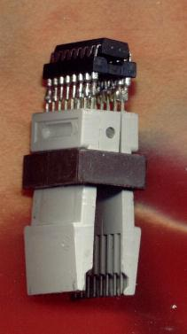
Przy wyłączonym komputerze klips zakłada się na kostkę tak, by oznakowania kostki w płycie i w klipsie były zgodne. Po właściwym założeniu i zablokowaniu klipsa przez przesunięcie pierścienia w dół komputer należy włączyć. Jeżeli uruchomi się - uszkodzona kostka jest ta, na której w tym momencie jest założony klips. W braku klipsa nakładać można samą kostkę, dbając o właściwy kontakt nóżek.
Ale nie zawsze daje się zlokalizować uszkodzoną kostkę za pomocą powyższych metod. Bywa tak, że komputer jest "martwy". Dysponujący oscyloskopem mogą spróbować obejrzeć przebiegi na pinach danych (patrz odpowiednie schematy). Brak sygnału na jednym z pinów danych pozwala podejrzewać daną kostkę. W najtrudniejszych przypadkach pozostaje "loteria", czyli wymiana kostek pamięci na chybił-trafił lub kolejno. Z moich doświadczeń wynika, że i tak uszkodzony okaże się ostatni układ ;o).
W komputerach XE z czterobitowymi układami pamięci często zdarza się, że wskutek uszkodzenia RAM uszkadza się i FREDDIE. Komputer najczęściej jest całkowicie martwy. "Żyje" tylko generator kwarcowy. W tym wypadku bezwzględnie należy najpierw wymienić pamięć, a potem FREDDIEgo.
Tu chciałbym opisać sposób na wykonanie układu zastępczego czterobitowej kostki typu 4464 z czterech kostek 4164. Najpierw trzeba przygotować je odpowiednio. W pierwszej kostce należy wygiąć pod spód pin 14 i połączyć go z pinem 2 za pomocą cienkiego drucika wygiętego w kształcie litery S. W trzech pozostałych kostkach należy zagiąć pod spód piny 14 i 2 łącząc je kroplą lutu. Kroplę tę należy spiłować, by była jak najcieńsza. Następnie nałożyć na siebie kostki jedna na drugą (pierwsza na dole) i zlutować stykające się piny 1, 3, 4, 5, 6, 7, 8, 9, 10, 11, 12, 13, 15 i 16. Maksymalnie skrócić piny 1 i 16. Tak przygotowany zestaw włożyć w otwory po wylutowanej czterobitówce tak, by pin 8 zestawu trafił w otwór 9 płyty. Zestawu nie wciskać do oporu, zostawić luz jak największy między dolną kostką i płytą. Poniższe zdjęcia przedstawiają etapy przygotowania zestawu.
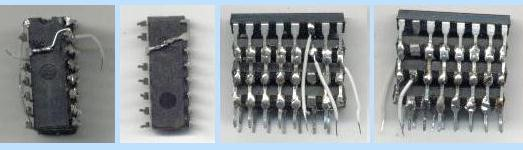
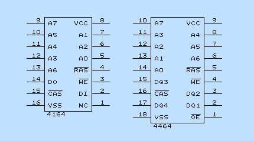
Rysunek wyprowadzeń tych układów powinien pomóc w prawidłowym połączeniu pozostałych pinów danych z otworami płyty za pomocą izolowanych odcinków przewodu. Piny 16 stosu powinny być połączone z otworem 18 płyty. W podobny sposób można zbudować stos z układów 41256, co pozwoli na rozszerzenie pamięci do 320kW w komputerach 130XE z kostkami czterobitowymi RAM. Sposób takiego rozszerzenia opisany jest w pliku ramex.zip w dziale "SCHEMATY". Nie jest możliwe zastosowanie w tym przypadku kostek 44256 z uwagi na ośmiobitowe ich odświeżanie.
Kolejnym częstym uszkodzeniem, a właściwie usterką, jest długie "wymóżdżanie" komputerów serii XE. Jest to usterka objawiająca się natychmiastowym pojawieniem się ekranu BASICu po włączeniu komputera (bez charakterystycznego terkotu). Najczęściej komputer wtedy nie działa. Najskuteczniejszym sposobem na to jest wymiana jednej kostki pamięci na inną, najlepiej innego producenta i z większym czasem dostępu. Tu już trzeba wypraktykować typ kostki. Również pomóc tu może wymiana kostki 4464 na opisany wyżej stosik z kostek 4164. Przyczyną tej usterki jest... zbyt wysoka jakość użytych pamięci. Atarynka nie zeruje RAMu po włączeniu i kostki potrafią przechowywać informację nieraz przez kilkanaście sekund. Komputer uruchamia się normalnie po wyłączeniu i odczekaniu tego czasu. Niecierpliwi mają w tym przypadku ciężkie życie.
Rozszerzenia pamięci.
Pierwsze rozszerzenia pamięci miały formę kart wkładanych do komputera Atari 400 i 800. Następne, i jedyne tego typu było rozszerzenie w postaci modułu dołączanego do gniazda rozszerzeń z tyłu komputera Atari 600XL, bowiem tylko do tego modelu był on przeznaczony. Kolejnym było rozszerzenie zamontowane fabrycznie w Atari 130XE. Powiększało ono pamięć do 128K, a jednocześnie otwierało drogę dla dalszych rozszerzeń nawet do 4M RAM przy wykorzystaniu jednego portu układu PIA. Główną przyczyną rozszerzania pamięci jest potrzeba uzyskania odpowiedniego rozmiaru ramdysku, w którym zmieści się cała pojemność dyskietki. Ramdysk to dodatkowa, wirtualna stacja dysków działająca dużo szybciej od rzeczywistej.
Podstawowym układem realizującym logikę rozszerzenia w 130XE jest układ specjalizowany C025953, zwany potocznie "małe MMU", czyli MMMU. W komputerach 65XE nowszych wersji i 800XE jest tylko miejsce na ten układ z założonymi zworami. Aby wykonać rozszerzenie do 128K wystarczy usunąć zwory i cynę z otworów oraz wlutować ten układ i pamięci w przeznaczone dla nich miejsce. Nie należy zapominać o oporniku R111 (patrz schemat Atari 130XE )ark. 4 lub 4a. Po takim rozszerzeniu otrzymamy komputer 130XE. Co jednak robić, gdy nie mamy układu MMMU? Jest tu sporo możliwości: można zaprogramować GALa, który zastąpi oryginalny układ, co zostało opisane w Pasia Stołówce . Najstarszym znanym mi rozwiązaniem skonstruowanym w firmie P.Z. Karen w r. 1987 był układ przedstawiony poniżej:
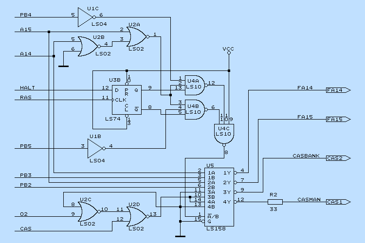
oraz skany oryginalnej karenowskiej płytki:
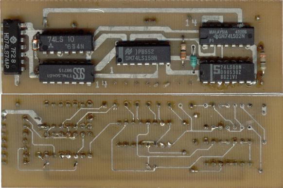
Układ działa doskonale i jest niezłym rozwiązaniem dla cierpliwych, nie mających dostępu do programatora GALi. Jeszcze innym, nietypowym rozwiązaniem jest układ z... epromem. Stosowałem go jeszcze w czasie, gdy o programowaniu GAL/PAL można było tylko pomarzyć:
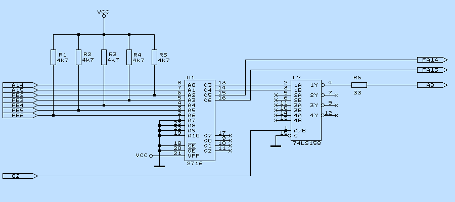
Zawartość epromu znajduje się w pliku expeprom.zip. Było to rozszerzenie pamięci do 256K. Jak widać z powyższego przykładu - wystarczyło tylko nieco pogłówkować i można było ominąć wszelkie problemy związane z dostępem do układów scalonych.
Jak działa pamięć dynamiczna
W sprzęcie Atari pamięć dynamiczna montowana jest tylko w komputerach jako pamięć o dostępie swobodnym (Random Access Memory). Chciałbym tu przedstawić jej zasadę działania.
Pamięć ta charakteryzuje się dużą pojemnością. Informacja zapamiętywana jest w postaci ładunku elektrycznego zgromadzonego w scalonych kondensatorach o niezwykle małej pojemności. W związku z nieidealną izolacją tych kondensatorów ładunek po pewnym czasie zanika. Aby uniknąć utraty informacji konieczne jest "doładowywanie" kondensatorów. Proces ten nazywany jest odświeżaniem i w Atari zajmuje się tym Antic. Przy wysokim stanie na wejściu _CAS Antic generuje kolejno adresy od 0 do 127, używając do tego 7 wejść adresowych pamięci. Jest to więc odświeżanie siedmiobitowe, dlatego w Atari zamontowano kostki 4164 o takim parametrze. Nie nadają się tu kostki z ośmiobitowym odświeżaniem, bo są też i takie, np. firmy Siemens. Poszczególne kondensatory podłączane są do szyny bitowej za pomocą tranzystorów z izolowaną bramką. Zestawy kondensator-tranzystor łączone są w matrycę, co znacznie upraszcza budowę układu scalonego. Dodatkowo dla zmniejszenia ilości wyprowadzeń stosuje się multipleksowane adresowanie matrycy komórek. Do zaadresowania 64kbit pamięci potrzeba 16 linii adresowych, a kostka pamięci ma ich 8. Adres podawany jest więc w dwóch połówkach: przy aktywnym sygnale _RAS podawany jest adres rzędów matrycy, a przy _CAS - adres kolumn. Adresy te zatrzaskiwane są w wewnętrzych rejestrach. Ponadto jest jeszcze sygnał R/_W, którego poziom określa, czy aktualnie odbywa się odczyt, czy zapis danych pamięci. Sygnał ten, zależnie od poziomu, włącza bufor wyjściowy (pin14) lub wejściowy (pin2) układu. W komputerze te dwa piny są zwarte. Zainteresowanych odsyłam do opisów układów scalonych RAM różnej pojemności, które znajdują się tutaj. Na podstawie plików datasheet można zapoznać się z budową tych pamięci.
Dla właściwej pracy pamięci istotne jest, by sygnały _RAS i _CAS pojawiały się w określonym momencie w stosunku do sygnału MUX (multipleksującego adresy, dostępnego na pinach nr 1 układów 74LS158). Uzyskuje się to za pomocą linii opóźniającej TTL. W komputerze Atari 600/800/1200XL jest to układ U29 C060472 (patrz schemat 800XL arkusz 4). W pozostałych komputerach serii XE funkcję tę przejmuje układ FREDDIE.
W przypadku uszkodzenia linii opóźniającej można ją zastąpić układem jak na rysunku:
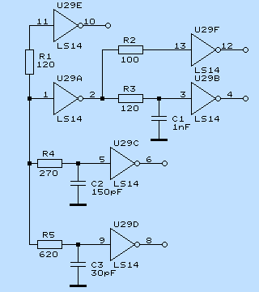
Uszkodzoną linię opóźniającą należy wylutować, oczyścić otwory lutownicze i wlutować układ 74LS14. Nóżki, dla których nie ma otworów, należy podgiąć do góry. Przedstawione na schemacie elementy najlepiej przylutować bezpośrednio do nóżek układu scalonego. W miarę możliwości należy tu zastosować elementy miniaturowe. W mojej płycie testowej układ ten pracuje doskonale już od kilkunastu lat.
Także układ FREDDIE może być wykonany z elementów zastępczych zgodnie ze schematem.
Zasilacz
Zasilacz jest istotnym elementem systemu, bez niego nic nie będzie działać. Jest urządzeniem bardzo prostym (patrz rysunek niżej), ale niedbałe wykonanie przez chińskie manufaktury powoduje jego niewłaściwą pracę. Pal sześć, gdy zasilacz nie daje napięcia. Najczęściej jest to wina uszkodzenia transformatora. Gorzej, gdy zasilacz daje za wysokie napięcie. Pamięci tego baaardzo nie lubią.
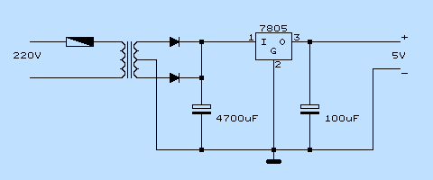
Przyczyna zbyt wysokiego napięcia wyjściowego (zamiast 5V jest 7 - 9V) leży najczęściej w utracie kontaktu między pinem 2 stabilizatora 7805 a GND. Zasilacz jest zalany masą epoksydową, która puchnie i pęka pod wpływem wydzielającego się w zasilaczu ciepła. Powoduje to wyrywanie elementów z druku i utratę kontaktu. Denko obudowy zasilacza należy podważyć na obwodzie zaczynając od miejsca w którym wychodzą przewody i zdjąć, odłupać masę epoksydową z płytki drukowanej i poprawić lutowanie elementów. Gorzej jest, gdy szkodzeniu uległ transformator. Najczęściej przepala się bezpiecznik termiczno-prądowy. Jest on trudno dostępny. Praktyka wykazuje, że przepala się on wskutek zwarć międzyzwojowych i transformator jest do wyrzucenia. W zastępstwie użyć można jakiegokolwiek transformatora o mocy 15-20W z napięciem wyjściowyn 10-11VAC. Przy podanych parametrach będzie on miał odpowiednią wydajność prądową (ok.1-2A). W przypadku uszkodzenia układu na płytce drukowanej (diody, kondensatory, stabilizator) należy odessać cynę z płytki i zdjąć ją, a z radiatora usunąć blok elektroniki. Radiator można wykorzystać ponownie, w płytkę wlutować sprawne elementy i do stabilizatora umocować radiator. W obudowie dobrze jest nawiercić otwory wentylacyjne. Po zmontowaniu zasilacza i sprawdzeniu działania należy unieruchomić transformator, radiator i płytkę w obudowie (Poxipol, Poxilina itp.).
Każda modyfikacja komputera czy magnetofonu powoduje wzrost obciążenia zasilacza i w pewnym momencie może się okazać, że wydajność jego jest za mała. Zwykle wąskim gardłem okazuje się stabilizator 7805, który ma wewnątrz zabezpieczenie przed przeciążeniem. W jego miejsce można wlutować 78S05 o podwyższonym do 2A prądzie maksymalnym. Należy się wówczas liczyć z możliwością przegrzania zasilacza przy długotrwałej pracy.
Zamiast naprawiać lub przerabiać fabryczny zasilacz można użyć starego zasilacza od peceta, wykorzystując napięcie 5V (przewód czerwony + i czarny - ). Najlepiej jest wykonać przejściówkę wykorzystując oryginalny przewód zasilacz - komputer i złącze zasilania z uszkodzonego napędu dyskietek 5,25" lub twardego dysku. W przypadku samodzielnego montażu przewodu należy zaopatrzyć się w złącze DIN7M, takie jak w oryginalnym zasilaczu. Piny 1, 4 i 6 trzeba podłączyć do +5V (przewód czerwony), a 3, 5 i 7 do masy (przewód czarny). Pin 2 pozostawiamy niepodłączony.
Kartridż testowy
Do wykrycia uszkodzeń w pozostałych obwodach komputera przyda się kartridż testowy z odpowiednimi wtykami testowymi (loopback) wkładanymi do gniazd SERIAL i dżojstika. Schemat takiego kartridża znaleźć można w pliku testcart.zip. Są tam schematy kartridża i wtyków testowych, a także opis kodów błędów wyświetlanych na ekranie podczas testu. Jest to bardzo wygodne narzędzie diagnostyczne.
Klawiatura
Do komputerów 600/800XL produkowano wiele typów klawiatur - 4 stykowe i 1 foliowy. Do serii XE produkowano w zasadzie jeden typ - foliowy, ale różnych rodzajów (jedno- i wielowarstwowe).
Jak działa klawiatura?
Za działanie klawiszy znakowych i HELP odpowiedzialny jest układ POKEY, a za programowalne klawisze funkcyjne START, SELECT i OPTION odpowiada GTIA. Klawisz RESET jest niezależny.
Klawiatura znakowa zorganizowana jest w matrycę 8 X 9 linii, co umożliwia odczyt 72 klawiszy. W Atari XL/XE wykorzystuje się 57 klawiszy. Naciśnięcie klawisza powoduje połączenie dwóch linii. POKEY okresowo sprawdza stan tych linii. W tym celu używa sześciobitowego licznika o wyjściach K0 - K5 (patrz schemat poniżej).
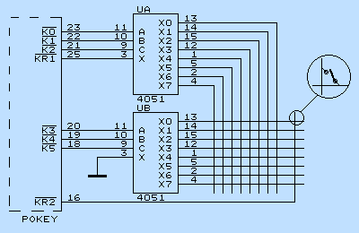
Linie matrycy klawiatury podłączone są do wyjść licznika za pomocą multiplekserów analogowych CMOS CD4051. Mają one tę właściwość, że działają w obie strony. Każdy multiplekser posiada trzy wejścia adresowe ABC określające, które wejście/wyjście X0 - X7 jest połączone z wyjściem/wejściem X. Układ UA działa jako odbiornik, UB jako nadajnik. Układ UB ma wejście X połączone z masą, w związku z czym na wyjściach X0 - X7 tego układu (a więc także na poziomych liniach matrycy z nimi połączonych) pojawiać się będzie kolejno stan niski. Stan ten przeniesie się poprzez zwarty styk podklawiszowy na linię pionową, która z nim jest połączona, a z niej na odpowiadające jej wejście układu UA. Gdy linia ta zostanie zaadresowana na wyjściu X i na wejściu KR1 pojawi się stan niski. POKEY w każdej chwili "wie", które linie są zaadresowane, "wie" też więc, który klawisz został naciśnięty. Po stwierdzeniu, że klawisz został naciśnięty, POKEY uaktywnia linię _IRQ zgłaszając żądanie przerwania maskowalnego do procesora. W momencie obsługi tego przerwania przez procesor POKEY wystawia na linię danych kod wciśniętego klawisza. Reszta należy już do procesora ANTICa i GTIA. Procesor umieszcza kod klawisza w pamięci, ANTIC generuje znak odpowiadający wciśniętemu klawiszowi, a GTIA generuje klik w głośniku.
Są jeszcze klawisze specjalne: Break, Shift i Control, które nie generują znaków i kliknięcia, służą bowiem bądź to do przerwania działania programu (Break), bądź są naciskane równocześnie z innym klawiszem w celu zmiany wyglądu znaku (Shift i Control). Naciśnięcie takiego klawisza wykrywane jest przez linię KR2 POKEY'a.
Uszkodzenia klawiatury
Najczęściej występującym uszkodzeniem klawiatur stykowych jest utrata kontaktu styku z płytą drukowaną. Wystarczy wtedy odpowiednio przylutować styk klawisza do płyty, zwracając uwagę, by był dokładnie dociśnięty w czasie lutowania. Może być też potrzebna naprawa ścieżek przewodzących w pobliżu punktu lutowniczego. Klawiatury foliowe mają to do siebie, że korodują w nich ścieżki przewodzące, najczęściej wskutek zalania kawą, herbatą czy napojami wyskokowymi jak Coca Cola. Pozostawienie zalanej klawiatury przez kilka dni powoduje nieodwracalne zniszczenie ścieżek przewodzących. Gdy zdarzy się przypadek zalania - należy jak najszybciej klawiaturę rozebrać (uwaga na wypadające kapturki - najlepiej robić to np. w wannie w łazience) i folię przepłukać letnią wodą i dokładnie wysuszyć. Podobnie można postąpić w przypadku silnego zabrudzenia klawiatury. Uszkodzenia ścieżek przewodzących można naprawić za pomocą srebrowego lakieru przewodzącego.
Częstym uszkodzeniem klawiatury serii XE jest wzrost oporności ścieżki masy wskutek utlenienia spowodowanego przepływem prądu zasilającego diodę świecącą. Do tejże ścieżki są zwierane styki klawiszy funkcyjnych OPTION, SELECT i START. Otóż wzrost tej oporności nie pozwala na rozpoznanie przez komputer jednoczesnego wciśnięcia dwóch lub trzech tych klawiszy na raz. Łatwo to sprawdzić w teście klawiatury SELF TESTu - przy naciśnięciu trzech tych klawiszy jednocześnie powinno być to sygnalizowane. W wypadku tego uszkodzenia test wykaże naciśnięcie jednego lub dwóch klawiszy. W celu naprawy trzeba wymienić opornik szeregowy diody świecącej R95 na inny o wartości 1,5 - 2K. Dioda będzie świecić słabiej, ale klawiatura będzie działać właściwie. W skrajnych przypadkach można wylutować jedną nóżkę tego opornika. Zaręczam, że użytkownikom magnetofonów (i nie tylko), którym wciąż wyskakiwał komunikat "REMOVE CARTRIDGE", znacznie polepszy się komfort życiowy ;o)).
Modulator
Zadaniem modulatora jest umożliwienie współpracy komputera z telewizorem przez wejście antenowe, bowiem dawne telewizory z reguły nie posiadały wejść monitorowych. W modulatorze następuje generacja fali nośnej z telewizyjnego zakresu VHF (3/4 kanał)lub UHF (36 kanał). Fala ta jest modulowana amplitudowo przez sygnał wizyjny i sygnał częstotliwości nośnej fonii (5,5MHz). Z uwagi na możliwość wystąpienia zakłóceń modulator jest dobrze ekranowany poprzez umieszczenie w obudowie metalowej.
W przypadku niemożności dostrojenia telewizora do właściwego odbioru fonii (obraz jest dobry, ale nie ma dźwięku, lub jest on silnie zaszumiony) - można pokusić się o dostrojenie. O ile w przypadku komputerów serii XL sprawa jest prosta, bo wystarczy delikatnie wykręcać rdzeń widoczny w otworze bliższym środka komputera, o tyle dostrojenie modulatora serii XE jest trudniejsze, wymaga bowiem wymiany kondensatora montowanego powierzchniowo na inny o mniejszej pojemności. Schemat modulatora komputerów XE przedstawiony jest poniżej:
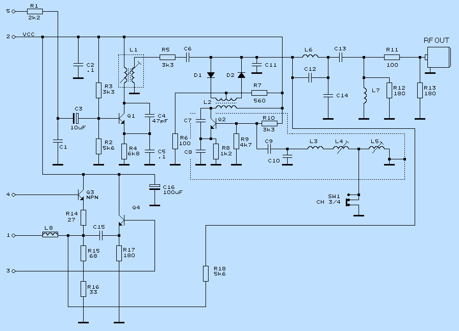
Na tranzystorach Q3 i Q4 zbudowany jest mieszacz sygnału wizyjnego. Na bazę Q3 (punkt 4) podawany jest sygnał Composite Luminance, a na bazę Q4 (punkt 3) sygnał koloru. Po zmieszaniu tych sygnałów otrzymujemy sygnał Composite Video dostępny w punkcie 1. Stąd kierowany jest do wyjścia monitorowego, a także przez rezystor R18 do modulatora amplitudy na diodach D1 i D2.
Generator częstotliwości różnicowej fonii pracuje na tranzystorze Q1. Jego częstotliwość określa indukcyjność L1 i pojemność C4. Ten właśnie kondensator należy wymienić na inny, o pojemności 24pF, aby możliwe było dostrojenie dźwięku w starszych telewizorach. Dokładnego dostrojenia dokonuje się rdzeniem cewki L1. Zmodulowany częstotliwościowo sygnał generatora podawany jest przez R5 i C6 na wejście modulatora równolegle z sygnałem Composite Video. Suma tych sygnałów moduluje amplitudowo generator częstotliwości nośnej na tranzystorze Q2. Zmiana częstotliwości kanału 3/4 odbywa się przełącznikiem SW1 zwierającym cewkę L5. Częstotliwości harmoniczne zostają odfiltrowane w filtrze pasmowym i sygnał po stłumieniu w tłumiku rezystorowym R11 R13 podawany jest na wyjście RF. Na poniższej fotografii przedstawiony jest wygląd wnętrza dwóch podstawowych typów modulatorów stosowanych w sprzęcie serii XE. Żółtymi kółkami oznaczone są kondensatory, które trzeba wymienić przy przestrojeniu.
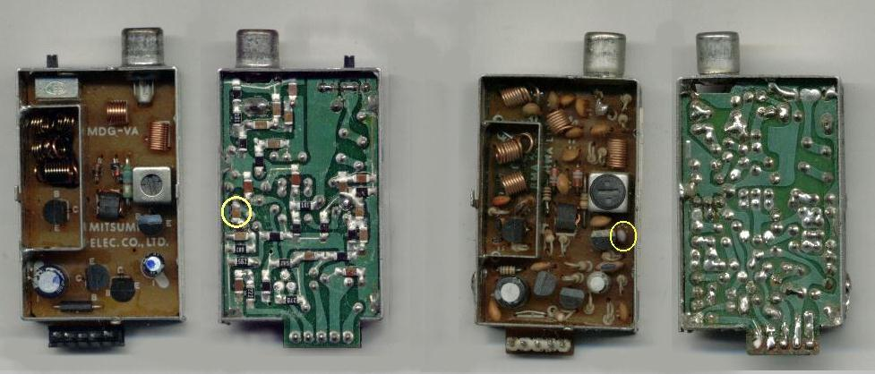
Chciałbym też wspomnieć przy okazji o regulacji sygnału "burst", którego poziom ma istotny wpływ na jakość koloru na ekranie. Poziom ten jest regulowany potencjometrem montażowym dostępnym od spodu komputera. Jedynie w Atari 800XL z układem Freddie dostępny jest on po rozebraniu komputera. Jeżeli na obrazie pojawia się pozioma tęcza kolorów lub całkowity brak koloru, to za pomocą tego potencjometru można wyregulować odpowiednią jakość obrazu.
Powyższe rozważania mają już prawie dwadzieścia lat. Sytuacja się zmieniła, praktycznie nikt nie korzysta z modulatora, niektórzy użytkownicy go wylutowują by zrobić miejsce na nowocześniejsze rozwiązania jak np. VBXE czy Sophia, które generują obraz RGB w większej rozdzielczości i ilości barw.
Jaki monitor?
Obraz uzyskiwany na ekranie telewizora pozostawia wiele do życzenia. Spowodowane jest to koniecznością modulacji/demodulacji sygnału wizji i następnie dekodowania koloru z zespolonego sygnału wizji CV (Composite Video). Dlatego zalecane jest, aby korzystać raczej z wyjścia monitorowego komputera i podłączać tam monochromatyczny lub jeszcze lepiej kolorowy monitor. Zaraz powstaje pytanie "jaki"? Odpowiedź jest prosta : najlepiej monitor kolorowy. Ale w żadnym wypadku nie nadają się tu monitory pecetowe EGA/VGA/SVGA, bo mają o wiele wyższy zakres roboczych częstotliwości odchylania niż oferują komputery Atari XL/XE. Ponadto mają one wejścia RGB - EGA ma cyfrowe, VGA i SVGA - analogowe. Dlatego najprostszym rozwiązaniem jest podłączenie Atarynki do wejścia monitorowego telewizora. Może się to wiązać z potrzebą wykonania odpowiedniego przewodu. Rodzaje używanych złącz i sposób podłączenia przedstawia poniższy rysunek:
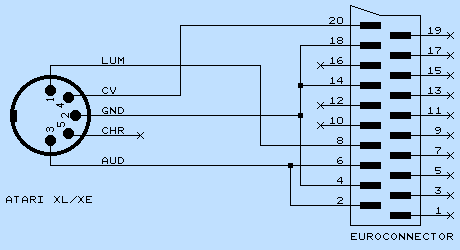
Przedstawione na rysunku złącza pokazane są w widoku montażowym, od strony lutowania. Konieczne jest zastosowanie przewodu ekranowanego, np. typowego przewodu stereo.
Coraz większą popularność zdobywa standard Super Video. Schemat odpowiedniego kabla pokazuje następny rysunek:
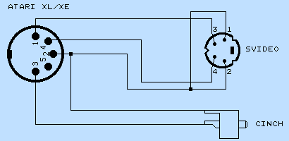
Tu obraz jest wyraźniejszy i ostrzejszy z uwagi na rozdzielenie torów luminancji i chrominancji. Jednak wymagania w stosunku do zastosowanych przewodów są większe; najlepiej zastosować tu odcinki przewodu antenowego 75W. Można na to poświęcić oryginalny kabel antenowy Atari, choć niektórzy poczytają to za świętokradztwo ;o). W zależności od konstrukcji monitora zamiast złącza CINCH można zastosować mini jack stereo. W tym wypadku zwieramy "gorące" styki. Komputery serii XL nie mają tej możliwości, bo do styku nr 5 wyjścia monitorowego nie podłączono sygnału Chroma. W takim przypadku należy zbudować prosty układ jak na rysunku:
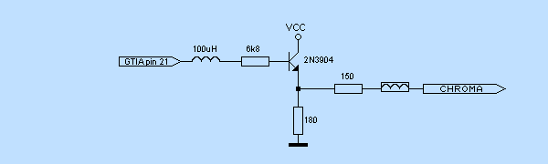
W przypadku otrzymania obrazu wyraźnego, ale z zakłóceniami koloru należy zmniejszyć poziom sygnału CHROMA poprzez dodanie opornika 3,9kW między bazę tranzystora i masę. Podobnie należy postąpić w przypadku komputerów serii XE - opornik wlutować należy między bazę tranzystora Q2 i masę.
Skoro już omawiam podłączanie do monitora, to kilka słów poświęcę też konsolom 2600, 5200 i 7800. Nie mają one wyjść monitorowych, a obraz uzyskiwany przez modulator nie jest najlepszy. Tu już nie obejdzie się bez ingerencji lutownicy we wnętrzu konsoli. Poziomy napięć na wejściu modulatora są zupełnie inne niż w komputerach (oprócz Atari 400) i nie jest możliwe bezpośrednie wyprowadzenie sygnału AV na zewnątrz. Konieczne jest wykonanie układu dopasowującego. Przykładowy schemat (tu dla Atari 2600) wygląda następująco:
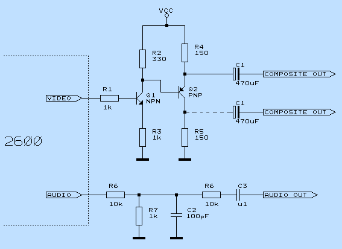
Układ montujemy na płytce uniwersalnej i umieszczamy wewnątrz konsoli, najlepiej w pobliżu modulatora.
Sygnał Video pobieramy z następujących punktów:
Atari 2600 Junior - punkt wspólny rezystorów R49, R51, R52, R53
Atari 2600 starsze wersje - punkt wspólny rezystorów R222, R223, R224, R234
Atari 5200 - z dowolnej końcówki L12
Atari 7800 - punkt wspólny rezystorów R64, R65, R66, R67
Atari 400 - punkt wspólny rezystorów R176, R177, R178, R179 i R180
Sygnał Audio zaś:
Atari 2600 Junior - punkt wspólny C49 i R48
Atari 2600 starsze wersje - punkt wspólny C210 i R209
Atari 5200 - z pinu 37 układu Pokey (A7)
Atari 7800 - punkt wspólny C55 i R32
Atari 400 - punkt wspólny C164 i R160
Aby uniknąć nieprzyjemnej mory na ekranie należy unieruchomić generator podnośnej dźwięku przez wylutowanie koncówki jednego z foliowych kondensatorów 820pF w pobliżu czerwonej cewki.
Połączenie zaznaczone na powyższym schemacie linią przerywaną wykorzystujemy w zależności od jakości otrzymanego obrazu. Sygnały wyprowadzamy na zewnątrz obudowy podwójnym przewodem ekranowanym montując odpowiedni wtyk w zależności od wejść monitora lub wejścia monitorowego telewizora.
To urządzenie peryferyjne znajduje się chyba u każdego właściciela Atarynki i każdy mu złorzeczył. Standardowa transmisja z prędkością 600 baud (bitów/sek.) pliku o długości 40K trwa koszmarnie długo. Przyjęty system modulacji FSK (Frequency Shift Key), korzystny z uwagi na odporność na zakłócenia, okazał się zawodny w zderzeniu z chińską techniką montażu. Każdy model magnetofonu 410, 1010 i XC produkowany był w dwóch typach: popularnym i profesjonalnym. Popularne magnetofony produkowane były w Chinach, profesjonalne w Japonii. W Polsce rozpowszechniły się te pierwsze. Najpopularniejszym i zarazem najgorszym okazał się XC12. Jego słabym punktem były źle dobrane i niskiej jakości elementy, głównie kondensatory (tzw. lizaki), których pojemność bardzo silnie zależy od temperatury. Podgrzanie takiego kondensatora lutownicą powoduje spadek pojemności prawie 10-krotny. O ile kodowanie sygnału (zajmuje się tym komputer, a dokładnie POKEY) i jego zapis nie budzą większych zastrzeżeń, to dekodowanie jest poniżej krytyki. Silny przydźwięk spowodowany niewłaściwym ekranowaniem wzmacniacza audio (XC12 i klony) pojawia się też w kanale cyfrowym i "upośledza" pracę magnetofonu.
Aby magnetofon poprawnie dekodował zapisany na taśmie sygnał, należy dokonać pewnych regulacji układów elektronicznych.
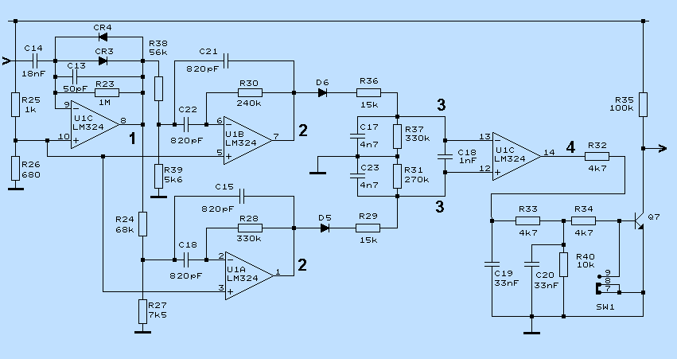
Przedstawiony powyżej fragment pochodzi ze schematu XC12. Sygnał z głowicy po wzmocnieniu w standardowym wzmacniaczu (nie pokazanym na rysunku) pojawia się na kondensatorze C14 i steruje wzmacniacz-ogranicznik zbudowany na wzmacniaczu operacyjnym U1C. Obustronne ograniczenie sygnału odbywa się za pomocą przeciwnie skierowanych diod CR3 i CR4. Wyższe harmoniczne odfiltrowywane są za pomocą C13. Powinien on mieć wartość nie większą niż 50pF. W niektórych magnetofonach spotyka się nawet 470pF, co powoduje niewłaściwą pracę ogranicznika. Na jego wyjściu powinien występować przebieg o stałej amplitudzie, niezależnej od częstotliwości. Z wyjścia ogranicznika (pin 8) sygnał podawany jest na wejścia dwóch filtrów aktywnych, nastrojonych na częstotliwości kodujące: 5327Hz co odpowiada logicznemu "1", 3995Hz (logiczne "0"). Dokładany opis zapisu kasetowego znaleźć można w rozdz. 11 książki "De Re Atari". Elementy R24, R27, R28, C15, C17 i U1A tworzą filtr aktywny nastrojony na częstotliwość niższą, R30, R38, R39, C21, C22 i U1B tworzą filtr nastrojony na wyższą częstotliwość. Przebiegi z wyjść obydwu filtrów są prostowane (CR5, CR6), odfiltrowane (C17, C23) i podane na odpowiednie wejścia wzmacniacza U1D pracującego z otwartą pętlą sprzężenia zwrotnego jako komparator. Na jego wyjściu pojawia się sygnał różnicowy, który po odfiltrowaniu w filtrze RC typu π steruje klucz tranzystorowy Q7. Zadaniem klucza jest ukształtowanie przebiegu wyjściowego i stworzenie wyjścia typu open collector, wszystkie bowiem urządzenia peryferyjne komputerów Atari 8bit muszą mieć takie wyjścia, aby nie przeszkadzać sobie wzajemnie. Jakże często zapominają o tym wykonawcy SIO2PC, które "nie chce" współpracować ze stacją dysków. Przy okazji przedstawiam dwa równoważne sposoby na "pogodzenie" kilku urządzeń wbudowanych do wnętrza komputera i korzystających z wejścia SIO IN (pin 3):
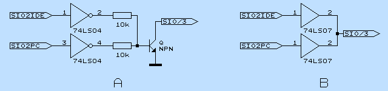
Rozwiązanie przedstawione na rysunku A jest wygodniejsze, bo pozostałe bramki LS04 można wykorzystać przy montażu drugiego Pokey'a czy przy rozszerzeniu pamięci. Zbędna też staje się dodatkowa dioda w SIO2PC. Tranzystor Q może być dowolnego typu małej mocy, np 2N3904, C1815, BC107, BC108 itp. Wróćmy jednak do regulacji magnetofonu.
Aby magnetofon poprawnie wyregulować najpierw należy sprawdzić prędkość przesuwu taśmy. Najlepiej zrobić to za pomocą taśmy o znanej długości (np. 2m między rolkami nawijającymi). Po odliczeniu ok. 7cm na rozbiegówki otrzymamy taśmę dł. 193cm. Przy standardowym przesuwie równym 4,72cm/sek taśma ta powinna odtwarzać się od początku do końca przez 193:4,72=40,8sek. Przy odchyleniach czasu odtwarzania większych niż 2,5% prędkość przesuwu należy regulować przez otwór w silniku napędowym za pomocą cienkiego wkrętaka. Następną czynnością jest ustawienie skosu głowicy. Do magnetofonu należy włożyć taśmę nagraną fabrycznie (może być muzyka) i po uruchomieniu magnetofonu komendą POKE 54018,52 delikatnie obracać wkrętem regulacyjnym w lewo i w prawo aż do uzyskania największej ilości wysokich tonów. Kolejna czynność to nagranie taśmy testowej. Można tego dokonać za pomocą prostego programu w BASICu:
10 OPEN#1, 8, 0, "C: " : REM OTWARCIE KANALU #1 DO ZAPISU NA MAGNETOFONIE
20 PUT#1, 85 : REM WYSLANIE BAJTU O WARTOSCI 85 DO BUFORA MAGNETOFONU
30 GOTO 20 : REM PETLA NIESKONCZONA
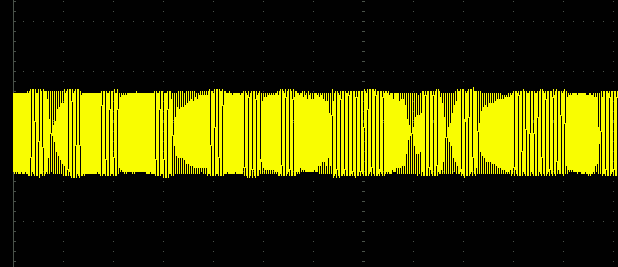
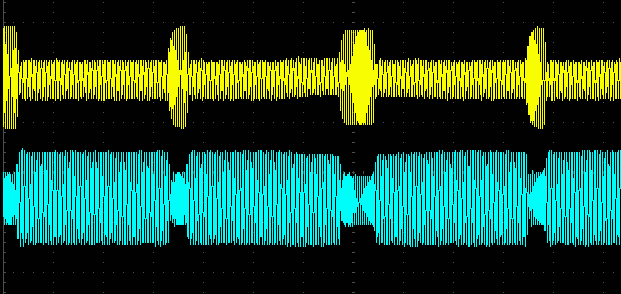
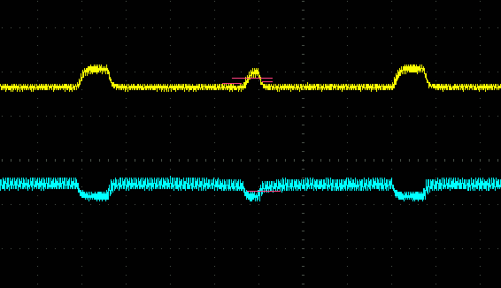
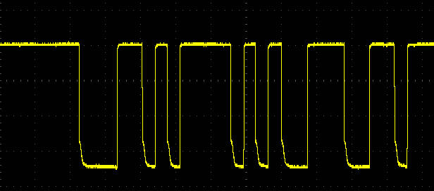
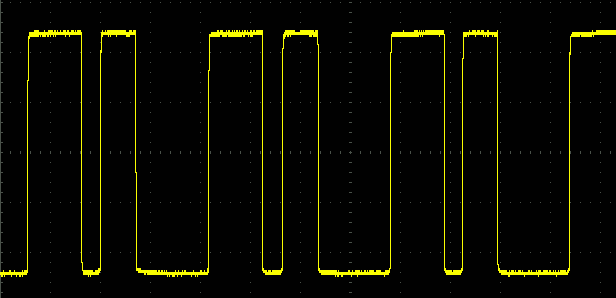
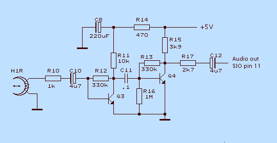
Taki zabieg całkowicie pozbawi nas jednak możliwości podsłuchu taśmy. Aby ten podsłuch przywrócić należy połączyć wyjście ogranicznika (pin 8 LM324) z otworem po bazie wylutowanego tranzystora poprzez opornik o wartości ok 200kW. Wartość ta może zostać zmieniona na większą, gdy podsłuch jest zbyt głośny, zależy to od indywidualnych upodobań użytkownika.
Drugi sposób to przeróbka układu tak, by wzmocnienie zmalało do ok. 100, jak jest to np. w magnetofonie 1010. Można końcówkę emitera tranzystora Q3 i masę wstawić opornik 1kW, co zmniejszy wzmocnienie tego stopnia do ok. 10. Podobnego zabiegu trzeba by dokonać z tranzystorem Q4, wstawiając opornik w granicach 100W - 470W.
W magnetofonie XC11 najczęstszym uszkodzeniem jest przerwanie masy w przewodzie w pobliżu obudowy. Aby usunąć defekt należy zewrzeć styki 4 i 6 we wtyczce magnetofonu, lub odpowiadające im punkty złącza na płytce elektroniki. Inne uszkodzenie to spadająąca sprężynka dociskowa sprzęgiełka ślizgowego.
Ważne też jest utrzymanie toru przesuwu taśmy (rolka dociskowa, oś pędna, głowice,) w czystości.
Użycie magnetofonu
Instrukcja magnetofonu nie podaje wszystkich możliwości jego użycia, więc chciałbym tu opisać je po kolei:
Użycie magnetofonu do odczytu i zapisu programów w Basicu.
Są trzy podstawowe sposoby zapisu i odczytu i każdy z nich posługuje się odpowiednim zestawem komend:
1. CSAVE / CLOAD
2. LIST "C:" / INPUT "C:"
3. SAVE "C:" / LOAD "C:"
Istotne jest, aby posługiwać się parami komend, a więc plik nagrany na kasetę komendą CSAVE odczytywać przez CLOAD itd., w innym przypadku zgłoszony zostanie ERROR 121. Pierwsza para komend dotyczy wyłącznie zapisu / odczytu kasetowego, pozostałe dwie, po użyciu w cudzysłowie nazwy i numeru urządzenia (D1:, P:, E:), używane są do zapisu / odczytu określonego urządzenia. Oczywiście komenda LOAD "P:" nie może być wykonana, bo z drukarki komputer nie potrafi nic odczytać.
Zapis odbywa się w postaci 128-bajtowych rekordów z przerwami o różnej długości między nimi, w zależności od użytej do zapisu komendy. CSAVE zapisuje krótkie przerwy, SAVE "C:" i LIST "C:" przerwy długie. Zapis pliku poprzedzony jest 20-sekundowym sygnałem 5327Hz i ten sam sygnał wypełnia przerwy międzyrekordowe. Przy odczycie bardzo ważne jest, aby ustawić taśmę na początku sygnału poprzedzającego rekordy pliku. Po wpisaniu komendy i naciśnięciu klawisza RETURN usłyszymy sygnał trąbki (przy zapisie uslyszymy dwa sygnały). Należy wtedy wcisnąć klawisz PLAY (przy zapisie PLAY i REC) i nacisnąć jakiś klawisz (oprócz BREAK, SHIFT, CONTROL i klawiszy funkcyjnych). Po ok. 10 sek. otwarty zostanie kanał odczytu magnetofonu w komputerze, i w tym momencie musi trwać jeszcze sygnał początkowy. Na taśmie w tym czasie powinien być czysty sygnał, wszelkie zagięcia, zabrudzenia mogą spowodować błąd odczytu.
Co jednak robić, gdy taśma jest np. zagięta i błąd wyskakuje jeszcze przed rozpoczęciem transmisji? Można temu zaradzić i zatrzymać taśmę klawiszem PAUSE tuż za zagięciem, wykonać czynności od początku i po odliczeniu 8-9 sek. wyłączyć PAUSE. Taśma ruszy i plik zacznie się wczytywać, co będzie słyszane jako charakterystyczny, dzwoniący dźwięk w głośniku.
Użycie magnetofonu do odczytu i kopiowania gier i programów w języku maszynowym.
Ładowanie gier i programów maszynowych wymaga nieco innego sposobu postępowania. Najczęściej jest konieczne wciśnięcie klawiszy START i OPTION równocześnie i włączenie komputera. Klawisze trzeba trzymać do momentu usłyszenia sygnału trąbki. Zakładam, że taśma została ustawiona na początku programu (sygnału początkowego) i wciśniety jest klawisz PLAY. Naciśnięcie jakiegoś klawisza spowoduje uruchomienie procedury wczytywania programu. Jeżeli jest to program bootingowy, to ładuje się bezpośrednio, natomiast programy w formacie pliku DOSa ładuą się za pomocą loadera, po którym wyświetla się jakiś znak (najczęściej wykrzyknik, ale czasem jest to znak zapytania lub trójkąt). Po loaderze następuje kilka sekund przerwy i dalej ładuje się właściwy program.
Niektóre programy bootingowe wymagają współpracy BASICu, wówczas należy je ładować przy wciśniętym samym klawiszu START. Takim programem jest np. Strip Poker.
Często się zdarza, że ulubiona gra na kasecie wczytuje się coraz trudniej. Wówczas, póki nie jest za późno, należy grę skopiować na inną kasetę, najlepiej nową. Do tego celu potrzebny jest program kopiujący, np Casdup czy Unicopy. W sieci można znaleźć wiele takich programów, np. na stronie atarionline.
Turbo KSO
Wysoka cena stacji dyskietek i kłopoty z wczytywaniem programów z magnetofonów były podstawową przyczyną powstania oprogramowania znanego pod nazwą Turbo 2000, KSO, Blizzard czy AST. Wszystkie te programy znacznie przyspieszyły zapis i odczyt magnetofonowy (ok. ośmiokrotnie). Zastosowanie tego oprogramowania wymagało jednak przeróbek magnetofonu. Dla przykładu opiszę sposób przeróbki magnetofonu XC12 na Turbo KSO. Schemat niezbędnych przeróbek przedstawiony został na poniższym rysunku:
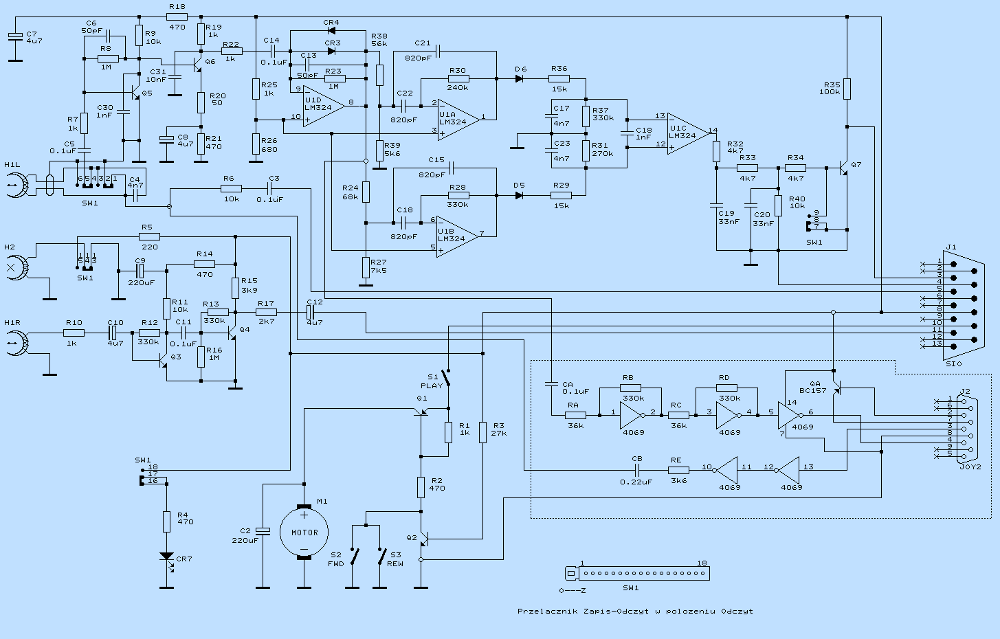
Na płytce magnetofonu należy wymienić kondensator C14 na inny o wartości 0,1 - 0,22μF. Układ zakreślony linią przerywaną najlepiej zmontować na niewielkiej płytce uniwersalnej i podłączyć do płytki magnetofonu możliwie krótkimi odcinkami przewodu według schematu. Jako złącze J2 najlepiej użyć przewodu od dżojstika (z autofire) o długości ok. 60cm. Przewód wyprowadzić na zewnątrz przez dodatkowy otwór wywiercony na styku dwóch połówek obudowy magnetofonu.
Do kompletu należy wykonać kartridż, który znacznie ułatwi obsługę całości. Można przerobić zwykły kartridż, ale łatwiej jest wmontować zaprogramowany eprom 2732 do komputera nalutowując go na BASIC lub OS ROM i odłączać go za pomocą wyłącznika SW jak na rysunku poniżej:
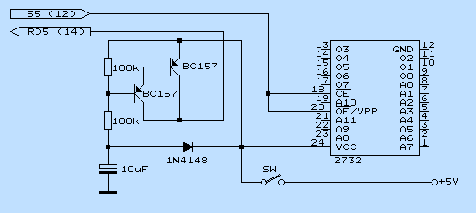
W epromie należy odgiąć pin 18, 20 i 24 i nalutować go odpowiednio na układ BASIC lub OS ROM. Piny oznaczone na rysunku jako krótkie powininny być przylutowane do odpowiadających im pinów BASICa lub OS ROM. Sygnały RD5 i _CCTL pobrać można z ze złącza kartridża (numery wyprowadzeń w strzałkach) lub odpowiednio z U3 (MMU) pin 8 i U2 (74LS138) pin 10.
Pozostałe elementy można zamontować "na pająka" lub na płytce uniwersalnej. Wyłącznik SW w pozycji rozwartej odcina zasilanie układu. W pozycji ON tego wyłącznika, po włączeniu komputera, prąd ładowania kondensatora włącza tranzystory i na RD5 pojawia się stan wysoki, co komputer rozumie jako włączenie kartridża i uruchamia go sterując eprom linią _CCTL. Po naładowaniu kondensatora RD5 przechodzi w stan niski i OS udostępnia obszar pamięci kartridża. W czasie ładowania kondensatora pojawia się napis "Czekaj.........." i uruchomiony zostaje Kasetowy System Operacyjny (KSO).
Obsługa programu jest następująca. Po pojawieniu się menu wstępnego:
N-KSO B-KSO&BASIC
K-KOPIOWANIE
należy wybrać odpowiednią opcję, zależną od wymagań uruchamianego programu. Naciśnięcie N uruchomi KSO z wyłączonym BASICiem, B z włączonym, a K - uruchomi program kopiujący w systemie Turbo/Normal. Po wybraniu opcji B pojawi się ekran BASICa. Można zapisywać i odczytywać programy w BASICu zarówno w trybie normalnym, jak i turbo. W trybie turbo jest nieco inna syntaktyka poleceń, magnetofon bowiem w tym trybie jest widziany jako stacja dysków. Zapisu dokonuje się poleceniami SAVE "D:NAZWA" lub LIST "D:NAZWA", odczytu zaś poleceniami LOAD "D:***" (min. trzy gwiazdki!) lub ENTER "D:***".
Po wybraniu opcji N Pojawi się menu KSO:
L-Ladowanie pliku R-Ladowanie i start
S-Start programu |-Zimny start
E-Sterowanie silnikiem P-Przerwy
C-Powrót do BASICA
Najczęściej przy ładowaniu gier wybiera się opcję R. L pozwala na załadowanie programu (program nie powinien być samouruchamiający się jak np. gry), a S - uruchomi go. Zimny start ( | =strzałka w dół) daje efekt jak wyłączenie i włączenie komputera. E pozwala uruchomić i zatrzymać silnik magnetofonu przez kolejne naciśnięcie. P zmienia długość przerw między rekordami. Opcja ta pomocna jest w przypadku kłopotów z wczytaniem programu z powodu opóźnienia zatrzymania silnika (zależy to od egzemplarza magnetofonu). C powoduje powrót do ekranu BASICa.
Kilka słów wyjaśnienia na temat sposobu zapisu programów turbo na taśmie. W odróżnieniu od Normal - Turbo zapisuje nagłówek programu. Jest to króciutki blok. W czasie ładowania programu magnetofon zatrzyma się po tym bloku, a na ekranie pojawi się nazwa programu i pytanie (T/N)?. Jeżeli chcemy załadować ten program - należy nacisnąć T, po czym magnetofon ruszy i załaduje właściwy program. I tu może pojawić się problem zbytniego wydłużenia czasu zatrzymania - początek następnego bloku nie zostanie wczytany, co spowoduje błąd ładowania. W takim przypadku należy skopiować program z długimi przerwami. Po naciśnięciu N magnetofon także ruszy i przewinie taśmę do nagłówka następnego programu.
Jeżeli w menu wstępnym wybierzemy opcję K-Kopiowanie - uruchomi się program kopiujący:
TURBO COPY 2.12 (C) WZab PIASTOW 1988
I-Wczytanie A-Dolaczenie
O-Zapis P-Przerwy
S-Silnik
Przy zapisie/odczycie turbo należy poslużyć się syntaktyką w sposób omówiony wyżej. Przy odczycie trybu normal wpisujemy C:. Przy kopiowaniu z normal pomijamy blok wykrzyknika.
Jeszcze słów kilka na temat współpracy Turbo KSO ze stacją dyskietek. Aby uniknąć konfliktów - przy współpracy ze stacją dysków urządzenie Turbo ma nazwę T. Litera D bowiem jest zarezerwowana dla stacji dyskietek. Wszystkie programy w wersji file mogą być kopiowane na kasetę w wersji turbo. Niektóre gry wymagają dodatkowego loadera, to już trzeba wypraktykować na własnej skórze. Do kopiowania plików z dyskietki na kasetę używa się w zasadzie dwóch programów: Autocopy i Kopiarka. Obydwa programy dostępne są na dyskietce t2000.zip. Program AUTOCOPY.COM to program w wersji 2.0 do kopiowania całych grup programów, KOPIARKA.TUR to program do kopiowania pojedynczych plików, AUTOCOPY.V30 to program do nagrywania kaset z zabezpieczeniem (nie wiem dokładnie o co tu chodzi - zabezpieczenie przed kopiowaniem?). Ponadto są tu dwa loadery L1 i L2, które pozwolą na zapis "opornej" gry.
Jeden z tych loaderów należy nagrać na taśmie przed właściwym programem. Program AUTOCOPY też ma swoje własne dwa loadery, któryś z tych czterech powinien dać wynik pozytywny.
Tyle na temat Turbo KSO.
Turbo 2000/SIO
Ten typ turbo wymagał, oprócz zmian w magnetofonie podobnych do poprzednich, dodania jednego przewodu do oryginalnego kabla SIO w XC12 oraz dodania przełącznika trybów Normal/Turbo. Niepotrzebny był za to dodatkowy kabel do dżojstika. Ten typ rozpowszechnił się na giełdzie warszawskiej. Schemat dodatkowego układu przedstawiony jest na poniższym rysunku:
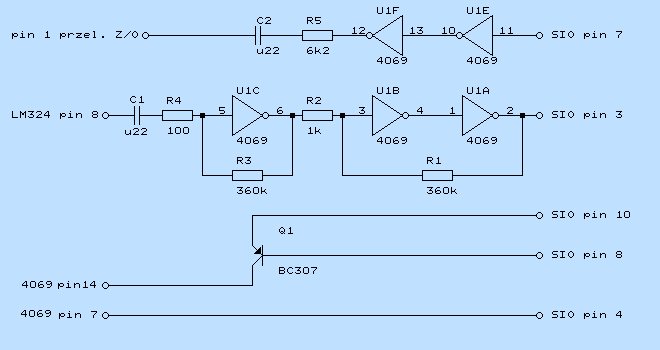
Turbo 2000 wykorzystuje linię COMMAND (pin 7 SIO) do zapisu danych na kasecie. Układ wzmacniacza odczytu różni się nieco od poprzedniego, ale nie ma to większego wpływu na jego działanie. Ten sam efekt osiągnięto tu dwoma sposobami - przez duże wzmocnienie (KSO) lub przez zastosowanie na wyjściu układu Schmitta (2000). Wadą tego układu jest konieczność zastosowania przełącznika Normal/Turbo, którego zadaniem jest przełączanie wyjść, jako że obydwa systemy korzystają z jednej linii wyjścia.
Wymiana paska w magnetofonie
Ponad trzydziestoletnia eksploatacja i magazynowanie magnetofonów Atari zmusza do wymiany pasków napędowych. Ilość pytań w tym temacie na forach atarowskich określa skalę problemu. Same paski są łatwo dostępne, problem powstaje przy mierzeniu ich średnicy. Mamy wyciągnięty pasek w kształcie jajka, wije się przy mierzeniu - same trudności. Proponuję założyć pasek na jakiś słoik, najlepiej stożkowy, o odpowiednim wymiarze. Stary pasek wejdzie do jakiegoś poziomu, który należy zaznaczyć. Nowy pasek nie powinien do tego poziomu dojść, najlepiej o 3 - 4 mm wyżej.
Mamy nowy pasek, więc należy go założyć w odwrotnej kolejności jak zdejmowało się stary. Często trzeba trochę zdemontować mechanikę, czasem bardziej, zależnie od konstrukcji.
Wymiana paska w magnetofonie 1010S
Odwracamy magnetofon spodem do góry, kładziemy na miękkiej podkładce i odkręcamy cztery długie wkręty:
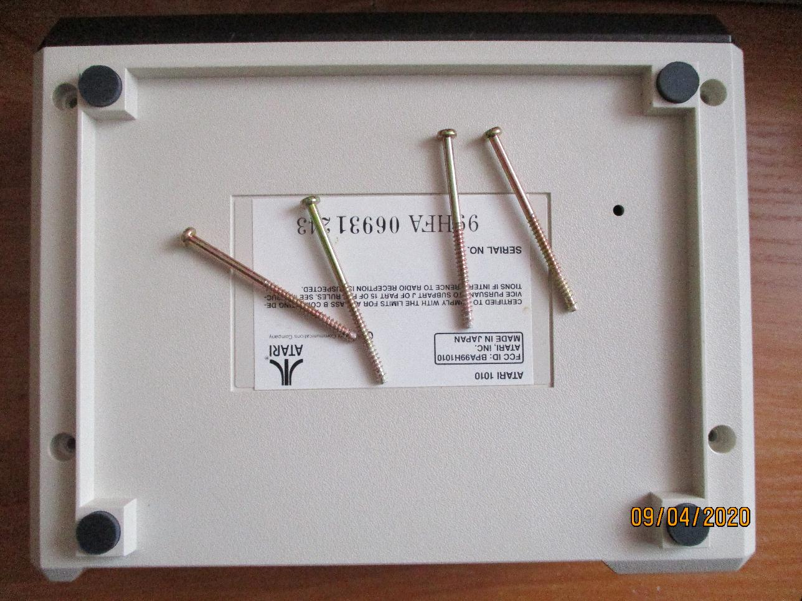
Teraz trzeba zdjąć dolną część obudowy: lekko podważyć z tyłu na połączeniu i naciskając na gniazda SIO do wnętrza odchylić i zdjąć dolną pokrywę. Odkręcić wkręt mocujący i zdjąć ekran. Następnie odkręcić dwa wkręty zaznaczone żółtymi kółkami. Wkręt z lewej strony jest dłuższy:
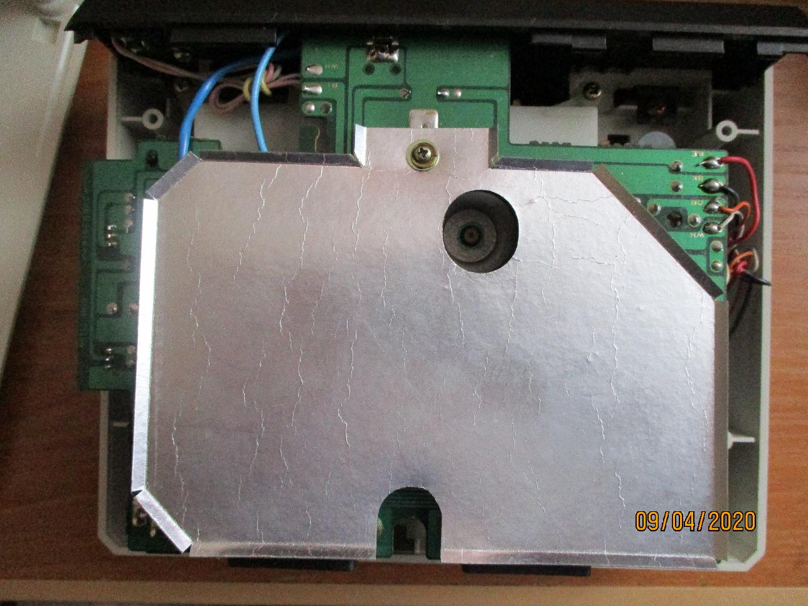
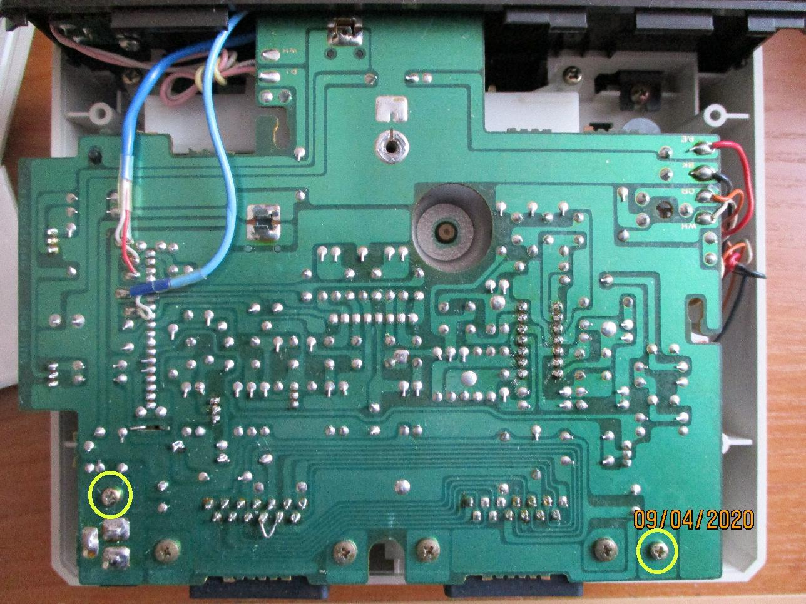
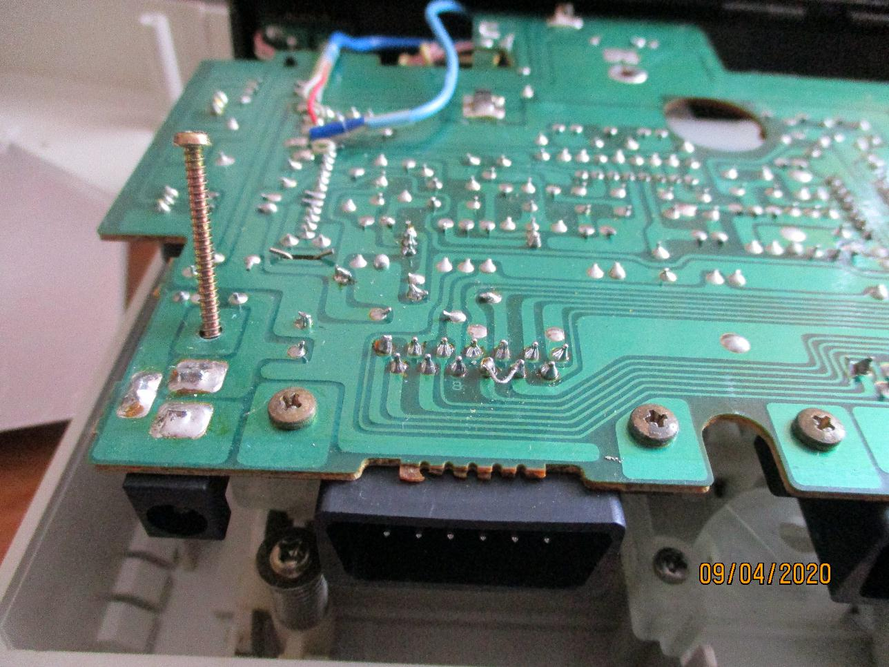
Odchylić elektronikę luzując skręcone przewody. Proszę zwrócić uwagę na stan styków oznaczonych żółtymi strzałkami oraz stan elementów na płytce elektroniki. Główniw chodzi o stan kondensatorów elektrolitycznych (wydęte wieczka, ślady wycieku na płytce itp.):
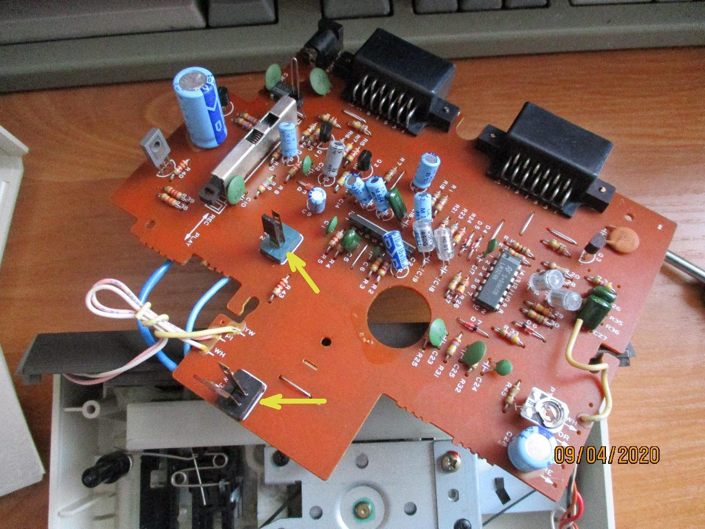
Następnie odkręcić wkręty zaznaczone czerwonymi strzałkami. Wkręt mocujący podstawę licznika do przedniej części obudowy wystarczy poluzować o 2-3 obroty. Dolny wkręt mocujący podstawę silnika jest umieszczony głęboko w prawym dolnym rogu:
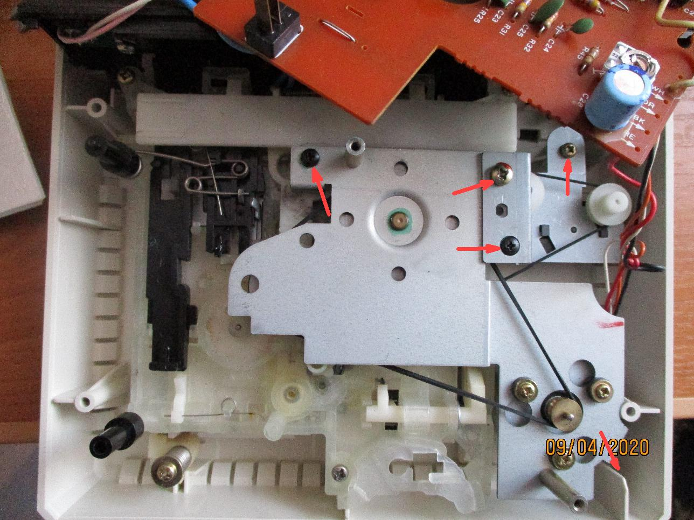
Po odkręcenu wkrętów lekko unieść podstawę łożyska koła zamachowego i silnika, obrócić w lewo wysuwając ją spod podstawy licznika i dalej aż do odsłonięcia koła zamachowego i pośredniego. Teraz można wyjąć stary pasek:
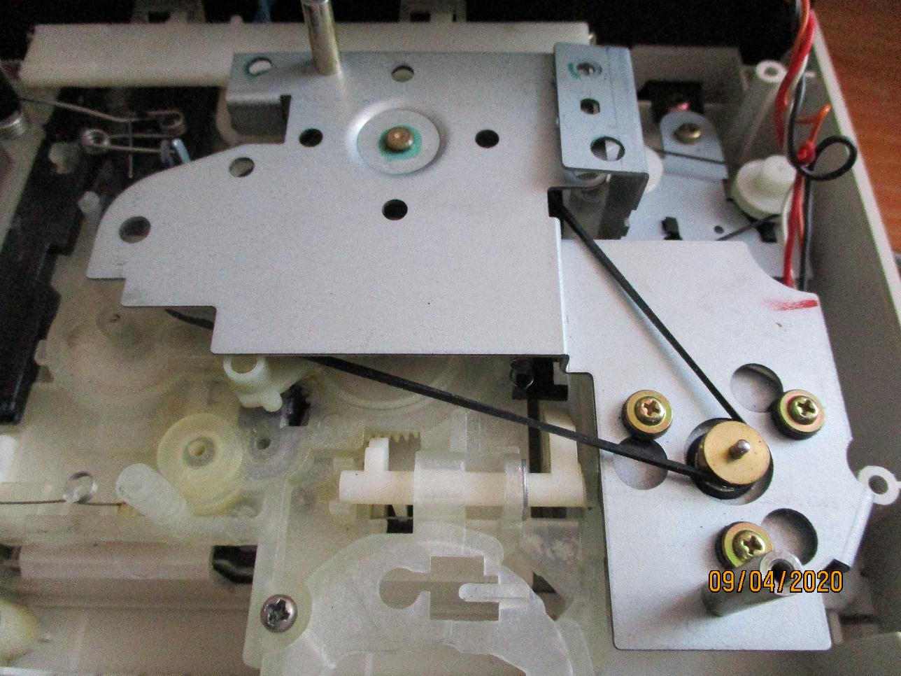
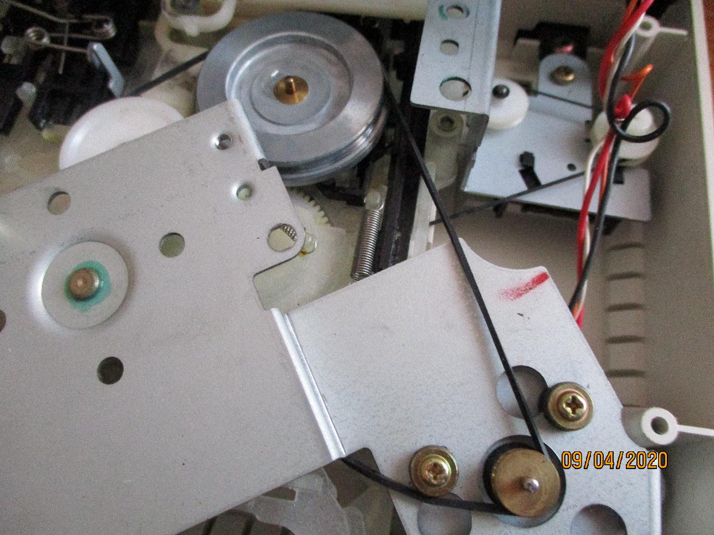
Następnie należy założyć nowy pasek i złożyć mechanizm. Dokręcić i wkręcić wkręty mocujące podstawę silnika i licznika oraz pokręcając kółkiem pasowym silnika sprawdzić bieg paska, działanie mechanizmu i licznika.
Pozostaje jeszcze założenie płytki elektroniki na miejsce zwracając uwagę na odpowiednie umiejscowienie styków. Dłuższy powinien wejść z przodu mechanizu do klawiszy, mniejszy z tyłu pazura włączającego. Płytka powinna leżeć swobodnie na swoim miejscu, wtedy należy ją umocować dwoma wkrętami. Z kolei skręcić luźne przewody, założyć i umocować ekran oraz założyć i przykręcić dolną pokrywę obudowy. Teraz trzeba podłączyć zasilacz, przewód SIO i sprawdzić działanie magnetofonu: przewijanie i odczyt. Do tego nie potrzeba kasety, wystarczy przy otwartej pokrywie kasety sprawdzić działanie. Do sprawdzenia odczytu wystarczy w Basicu wpisać POKE 54018,52, wtedy po naciśnięciu PLAY powinna się obracać prawa oś kasety i obracać rolka docisku taśmy do osi koła zamachowego. Gdy wszystko działa - magnetofon jest gotowy do dalszej intensywnej eksploatacji.
Wymiana paska w magnetofonie 1010 oraz XC12/XCA12/CA12.
W przypadku magnetofonu 1010 wymiana płaskiego paska nie nastręcza problemów. Należy od spodu odkręcić cztery wkręty spinające górną i dolną połówkę obudowy, obrócić magnetofon w normalne położenie, obrócić tyłem do siebie i odchylić tylną część gónej połówkw obudowy do góry i do przodu:
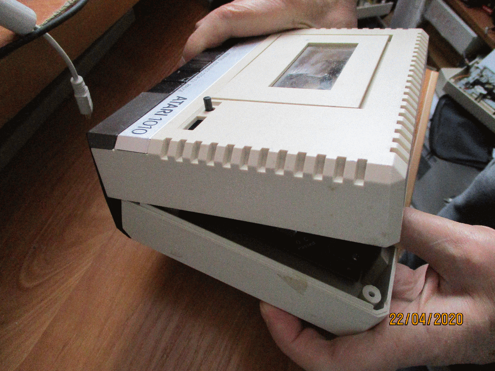
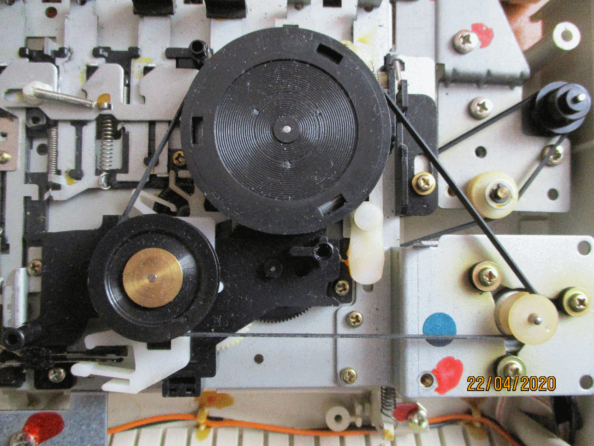
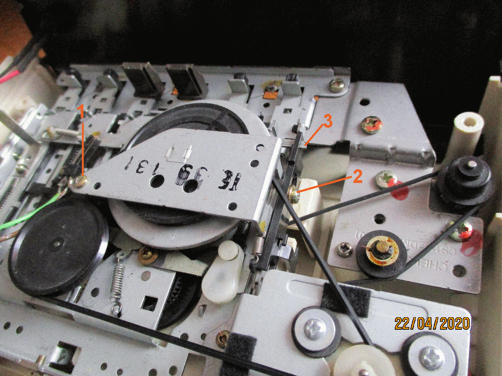
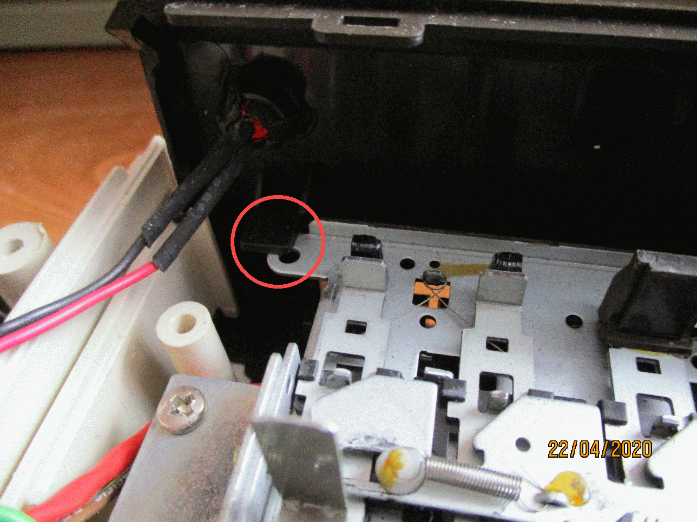
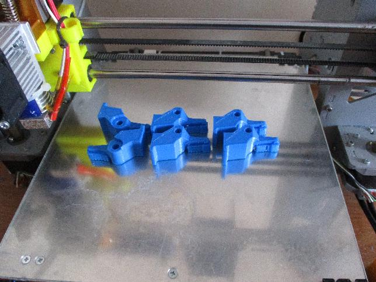
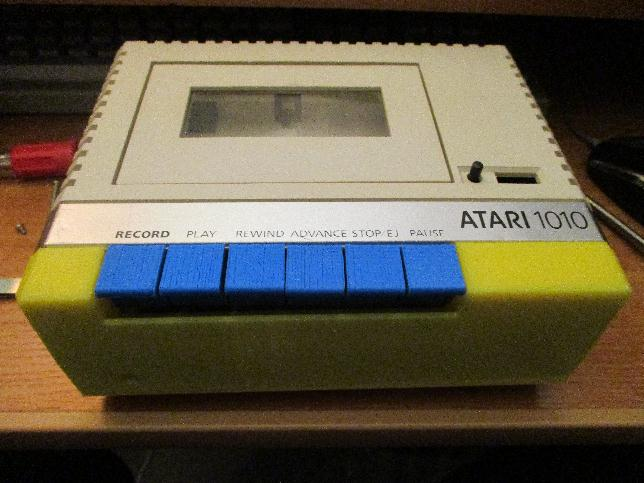
Na powyższym zdjęciu widać też wydrukowany panel przedni, bo z dawnych czasów mam kilka magnetofonów 1010C bez klawiszy i panelu, więc spróbuję je uzupełnić.
Zdarza się, że komputer "nie widzi" stacji, czyli po włączeniu komputera słychać terkot i pojawia się SELF TEST lub READY, w zależności od tego, czy przy włączaniu komputera wciśnięty był klawisz OPTION. Jeżeli przełącznik numeru stacji ustawiony jest właściwie - winny jest najczęściej układ buforowy U1 (patrz schemat 1050). Należy go wymienić na taki sam układ lub nasz krajowy odpowiednik UL1111. Z braku układu scalonego można wmontować tranzystory dyskretne NPN w plastykowych obudowach, np 2N3904 lub podobne.
Popularne w Polsce stacje LDW Super 2000 i CA2001 mają wbudowany układ buforowy U7 74LS244 (patrz schemat LDW).
Częściej zdarza się, że komputer stację widzi, ale na ekranie pojawia się BOOT ERROR. Oznacza to, że albo dyskietka jest uszkodzona, albo stacja. Jeżeli dzieje się tak przy wszystkich dyskietkach - trzeba wziąć się za naprawę. Po otwarciu obudowy dokładnie obejrzeć głowicę, czy nie jest zabrudzona brązowym osadem i ewentualnie oczyścić ją dyskietką czyszczącą lub chusteczką higieniczną zwilżoną niewielką ilością acetonu. Stację należy włączyć i obserwować w tym momencie głowicę. Powinna ona wykonać ruch do osi dyskietki i z powrotem. Jeżeli wykona ruch tylko do osi - trzeba sprawdzić, czy sensor ścieżki zerowej nie jest zabrudzony kurzem lub zasłonięty np. oderwanym stikerem do zabezpieczania dyskietek. Sensor ten to czarne, poziome widełki, w których chowa się płaski występ wózka głowicy. Jeżeli oczyszczenie nic nie da - należy sensor wymienić. Podobnie należy postąpić, gdy głowica poruszy się do środka i na zewnątrz, dojdzie do oporu i będzie przez chwilę uderzać o zderzak. Po wymianie sensora trzeba wyregulować jego położenie za pomocą specjalnego programu
test 1050.
Jeżeli sensor jest w porządku - należy włożyć dyskietkę z programem i włączyć komputer. Po uruchomieniu stacji delikatnie należy naciskać na wózek głowicy, starając sie go przesunąć do środka lub na zewnątrz. Nie należy tu używać nadmiernej siły, żeby nie przesunąć głowicy na inną ścieżkę. Gdy w ten sposób spowodujemy odczytanie kilku sektorów - oznacza to, że głowica nie trafia dokładnie na ścieżkę. Może to być wina dyskietki nagranej na stacji z naruszoną regulacją. W tym wypadku regulacja polega na poluzowaniu wkrętów ustalających silnika krokowego i delikatnym jego przekręceniu w odpowiednim kierunku i dociśnięciu wkrętów. Regulacja ta jest potrzebna niezbyt często i powinno się ją przeprowadzać wtedy, gdy naruszony jest lakier zabezpieczający wkręty mocujące silnik krokowy, oraz najlepiej przy użyciu dyskietki nagranej fabrycznie. Do właściwego spozycjonowania głowicy dobrze jest posłużyć się oscyloskopem podłączonym do punktu TP3 lub TP4. Głowicę należy ustawić tak, by przebieg na ekranie oscyloskopu osiągnął maksymalną amplitudę. W ostateczności można posłużyć się analogowym woltomierzem ustawionym na pomiar napięcia zmiennego. Aby "zmusić" stację do nieprzerwanego obracania dyskietki można posłużyć się programem testowym test 1050 po wybraniu opcji testu prędkości obrotowej dyskietki.
Najlepszym sposobem jest regulowanie głowicy na tzw. "kocie oczko", ale jest to sposób praktycznie niedostępny w domowych warunkach. Wymaga zastosowania odpowiedniej dyskietki fabrycznie nagranej sygnałem analogowym. Zainteresowanych tym sposobem odsyłam do instrukcji serwisowej Atari 810:
is810.pdf.
Następną czynnością będzie zgrubne sprawdzenie prędkości obrotowej dyskietki. Pod spodem napędu widać pasek napędowy. Należy sprawdzić jego stan i naprężenie. Na większym kole pasowym naklejone są pierścienie stroboskopowe. Pierścienń 50Hz po oświeteniu neonówką zasilaną prądem sieci, lub, jak radzi Candle, LEDem podłączonym bezpośrednio do gniazda zasilania stacji (przez opornik oczywiście), powinien sprawiać wrażenie nieruchomego lub obracającego się z nieznaczną prędkością. Gdy ten warunek nie jest spełniony - trzeba sprawdzić napięcie 12V za stabilizatorem Q8 7812. Dobrze jest obejrzeć to napięcie za pomocą oscyloskopu. Pojawienie się składowej zmiennej świadczy o uszkodzeniu jednej z diod powielacza napięcia CR15 i/lub CR16. Należy też sprawdzić, czy kondensatory elektrolityczne są dobrze wlutowane w płytę, bowiem w miarę upływu czasu wydzielające się wewnątrz gazy powodują wypychanie gumy uszczelniającej i wyrywanie kondensatora z płyty. W przypadku wystąpienia składowej zmiennej należy również sprawdzić temperaturę silnika napędowego i radiatora po dłuższej pracy. Silne grzanie się silnika świadczy o zanieczyszczeniu komutatora startym materiałem szczotek. W tym wypadku także bardzo silnie nagrzewa się radiator wskutek nadmiernego poboru prądu. Możliwe jest rozebranie silnika i oczyszczenie komutatora - trzeba w tym celu spiłować zagniecenia na jego korpusie, następnie podważyć pokrywę i zdjąć ją wraz z uzwojeniem czujnika prędkości. Teraz, opierając silnik kółkiem pasowym o stół, naciskać korpus w dół, podważająć pastikową podstawę szczotek. Spowoduje to wypchnięcie przedniego łożyska ślizgowego (przy kółku pasowym) z obudowy. Następnie delikatnie pokonując opór magnetyczny wyciągnąć cały zespół wirnika.
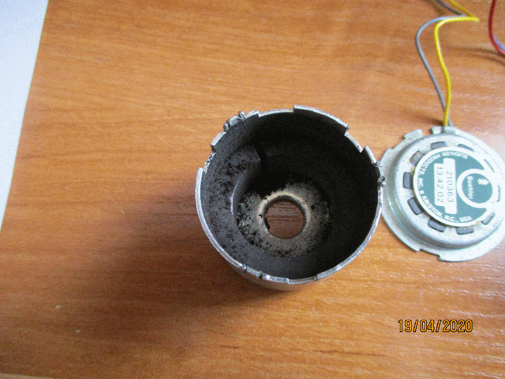
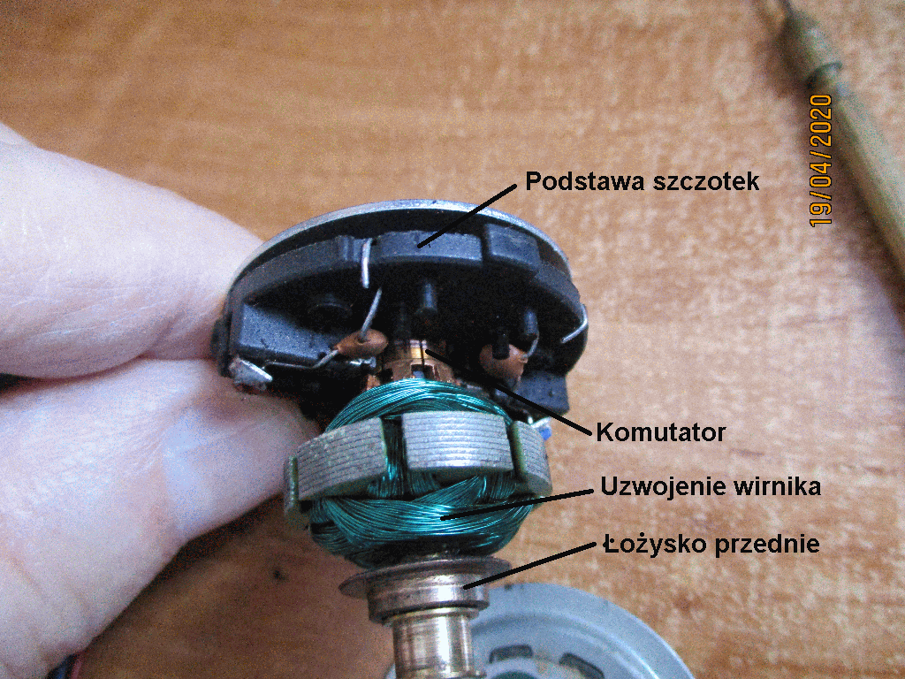
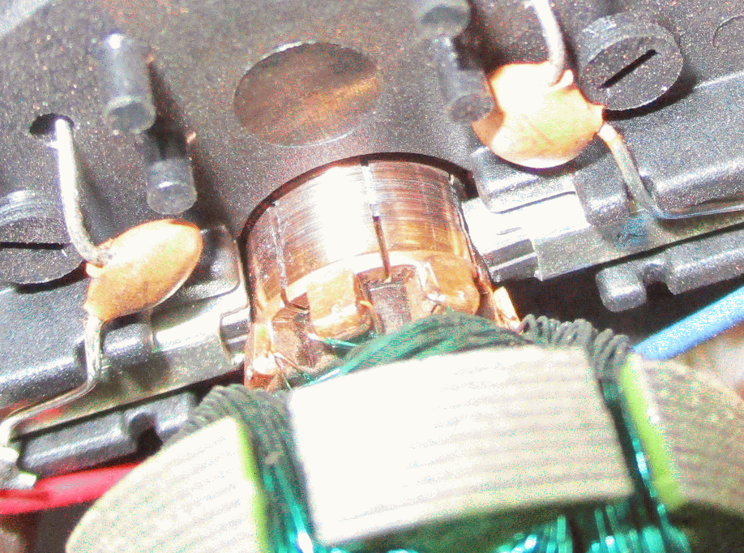
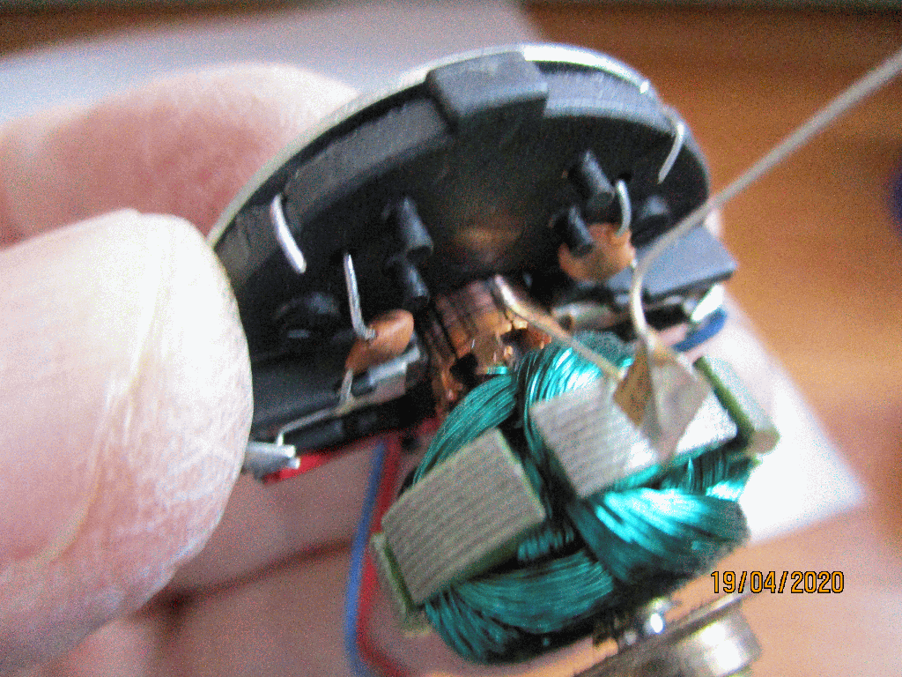
Przystępujemy o usunięcia tych złogów. Szczeliny między sekcjami komutatora mają niewielką szerokość, więc należy sobie wykonać odpowiednio cienkie narzędzie. Ja spłaszczyłem końcówkę kondensatora i tą łopatką wypychałem złogi w kierunu podstawy szczotek. Następnie cały komutator przedmuchałem sprężonym powietrzem.
Teraz można przystąpić do składania silnika. Wpuszczamy wirnik w obudowę (uwaga na siłę magnesu), ustawiamy podstawę szczotek we właściwym położeniu względem obudowy i delikatnie naciskamy na tylny koniec osi wirnika (uwaga na talerzowy magnes czujnika obrotów!). Następnie ustawiamy silnik na podstawce z otworem na kółko pasowe (ja użyłem w tym celu szpulki od cyny), i naciskamy coraz mocniej na oś wirnika i podstawę szczotek (talerzyk!) wciskamy całość aż do prawidłowego wciśnięcia łożyska w otwór obudowy. Sprawdzamy czy wirnik lekko się obraca. Następnie zakładamy tylną osłonę z uzwojeniem czujnika obrotów i zanitowujemy obudowę. Montujemy silnik w stacji przykręcając do napędu i wciskamy złącze na miejsce.
Dokładna regulacja prędkości obrotowej dyskietki jest możliwa przy użyciu programu test 1050. Czas obrotu dyskietki powinien zawierać się w granicach 207,3 - 209,3 msek. Gdy regulacja potencjometrem nie daje rezultatu - może być konieczna wymiana kondensatora C47 lub układu U5 LM2917.
Gdy powyższe parametry są właściwe, a stacja nadal nie czyta - należy spróbować delikatnie obracać kondensatorem nastawnym C36 obok kontrolera U13 2793. Gdy to nie da rezultatu trzeba za pomocą oscyloskopu prześledzić tor sygnałowy obserwując przebiegi w punktach TP1 - TP5. Gdy przebiegi widoczne są w każdym punkcie testowym - spróbować wymienć kontroler U13. Można tu użyć układu 2797 pod warunkiem, że pin 25 znajdzie się poza podstawką.
Po każdej wymianie kontrolera lub niepotrzebnych manipulacjach potencjometrami VR3 lub VR5 należy przeprowadzić regulację timingów kontrolera.
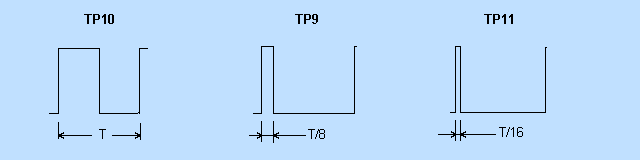
Kolejność regulacji jest następująca:
Po dokonaniu powyższych regulacji należy sprawdzić formatowanie w obydwu gęstościach oraz zapis i odczyt plików. Gdy te regulacje nie przyniosą efektu - należy wymienić kontroler 2793.
Długo użytkowana stacja 1050 jest coraz bardziej zawodna. Najczęściej jest to wina napędu, w którym uległo zużyciu wiele elementów. Jako przykład służyć może uszkodzenie (wystrzępienie) paska napędowego, silnika, łożyska docisku dyskietki czy sprężyny płaskiej ramienia docisku. W takim wypadku naprawa jest trudna lub nawet niemożliwa. Zalecam wymianę napędu na standardowy napęd 360K. Jedynym ograniczeniem w wyborze typu jest możliwość regulacji obrotów dyskietki - wiele napędów nie ma takiej opcji. Centralny silnik liniowy odznacza się wysoką stabilnością obrotów i często stosuje się stabilizację kwarcową. Do zamontowania nadają się więc tylko te napędy, które mają pod spodem, na płytce silnika napędowego dyskietki, potencjometr regulacyjny.
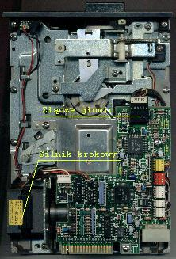
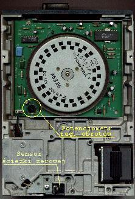
Standardowe napędy 360K używane w PC ustawione są na 300obr/min (na prawym zdjęciu powyżej widać napis na wirniku silnika "300RPM"), a w 1050 - na 288obr/min. Nowy napęd należy znacznie przerobić, usuwając płytkę elektroniki i dopasowując złącza silnika krokowego, głowicy i sensora ścieżki zerowej. Potrzebny jest też dodatkowy wyłącznik krańcowy sterowany kluczem zamykającym dyskietkę w stacji. Można w tym celu wykorzystać gotowe elementy z oryginalnego napędu: złącza z przewodami i wyłącznikiem krańcowym. Trochę kłopotów może sprawić odpowiednie podłączenie głowicy (tylko dolnej), szczególnie, gdy głowice są połaczone taśmą z elektroniką. Można wtedy wykorzystać oryginalne złącze do wykonania przejściówki. Dokładny opis przeróbek mija się z celem, bowiem jest mało prawdopodobne, aby PT Czytelnik użył identycznego napędu. Pozostaje dokładne przestudiowanie budowy poszczególnych elementów napędu oryginalnego i zamiennego i ich porównanie, a także podłączanie metodą prób i błędów. Istotne jest, aby nie zamienić przewodów zasilania +12 i +5V w silniku napędu dyskietki. Silnik ten podłączony jest najczęściej czterema przewodami: +5V, +12V, masa i start/stop. Ten ostatni sygnał trzeba podłączyć do końcówki 11 układu 6532. Może też wystąpić potrzeba odwrócenia fazy tego sygnału, do czego można wykorzystać tranzystor Q4. Przy podłączaniu silnika krokowego trzeba sprawdzić, który przewód był podłączony do +12V i podłączyć go również do tego napięcia w złączu 1050. Pozostałe przewody podłączyć w przypadkowej kolejności, a po włączeniu stacji metodą prób ustalić właściwą kolejność tak, by głowica zachowywała się prawidłowo. Zamiast sensora WPRT proponuję zamonować wyłącznik z sygnalizacją za pomocą diody świecącej - nie trzeba wycinać dodatkowych szczelin w dyskietce do zapisu na drugiej stronie. Można tu zastosować dwukolorową diodę, wtedy kolor czerwony oznacza zezwolenie na zapis, zielony - jego zabronienie. Odpowiedni schemat przedstawiony został poniżej:
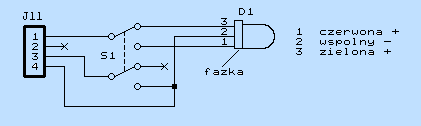
Układ należy podłączyć do gniazda J11 na płycie stacji 1050. Oczywiście, można zamontować sam pojedynczy wyłącznik, a położenie jego dźwigni będzie informowało nas o zezwoleniu lub zabronieniu zapisu. W skrajnym przypadku można zrezygnować z przełącznika i na stałe założyć zworę na piny 2 i 3 złącza J11. Wówczas trzeba zachować szczególną ostrożność przy zapisie dyskietek.
Top Drive 1050
Stacja 1050 ma dwie podstawowe wady: nie obsługuje podwójnej gęstości (DD) i wczytywanie dyskietek nagranych w trybie przyspieszonym jest bardzo wolne. W celu usunięcia tych niedogodności powstało rozszerzenie pod nazwą Top Drive 1050, a w miarę upływu czasu ukazało się jego kilka różnych wersji. Tu chciałbym opisać sposób wykonania i obsługi najprostszego z nich, czyli Top Drive Happy. Nie ma konieczności wykonywania płytki drukowanej, całość można zmontować "na pająka" w postaci modułu montowanego do stacji w miejsce oryginalnego ROMu. Na poniższym rysunku przedstawiony został schemat rozszerzenia.
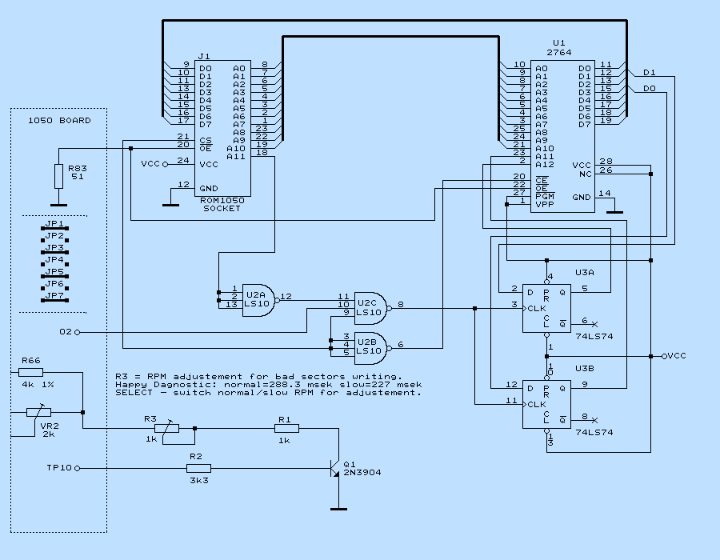
Do wykonania modułu, oprócz elementów przedstawionych na schemacie, potrzebna będzie podstawka 28pin pod eprom. Eprom należy zaprogramować zawartością pliku tophappy.zip.
Nóżki układów TTL należy skrócić, same układy oznakować od spodu dla uniknięcia pomyłek i za pomocą kleju "Kropelka" przykleić grzbietami do bocznej lewej płaszczyzny podstawki epromu. Eprom włożyć w podstawkę tak, by piny 20 i 23 znalazły się poza podstawką. Piny 1, 26, 27 i 28 epromu zewrzeć se sobą lutując odcinek gołego kynaru bezpośrednio do nóżek nad podstawką. Przewód ten należy lutować jak najbliżej plastikowego korpusu podstawki szczególnie przy pinie 26 i z minimalną ilością lutu. Pin 26 wchodzi w podstawkę na płycie stacji i jego wolna długość musi zapewnić właściwy kontakt, jest to bowiem pin zasilający cały moduł. Pozostałe połączenia wykonać wg schematu. Gotowy moduł włożyć w podstawkę oryginalnego ROMu stacji tak, by pin 14 postawki modułu trafił w pin 12 podstawki ROMu. W przypadku, gdy w stacji oryginalnie był zamontowany eprom 2732, należy przelutować zwory na płycie w położenie zgodne z rysunkiem. Sygnał 02 można wziąć z 28 nóżki procesora 6507.
Tak zmontowany moduł powinien już poprawnie działać, czyli po włączeniu stacji głowica powinna wykonać szybki ruch do środka i z powrotem. W celu dokładniejszego przetestowania należy załadować DOSa obsługującego podwójną gęstość (np. DOS 2.9, 4.3, MyDos czy Sparta Dos), a następnie sformatować czystą dyskietkę w podwójnej gęstości, zapisać np. pliki DOSa, a następnie odczytać je. Poprawnie zmontowany modul działa od razu właściwie.
Pozostaje jeszcze zamontowanie tranzystora i oporników. Układ ten służy do zmiany obrotów silnika napędowego tak, by możliwy był automatyczny zapis badsectorów. Przedstawiony na rysunku potencjometr R3 służy do dokładnego dostrojenia "wolnych" obrotów. Po wyregulowaniu można zmierzyć wartość sumy R1 i R3 i wmontować odpowiedni pojedynczy opornik.
Obsługa Top Drive 1050
Podstawową zasadą przy użytkowaniu stacji z Top Drive 1050 jest zasada włączania zasilania stacji przy otwartej klamce napędu, w przeciwnym razie stacja nie będzie działać. Do stacji należy włożyć dyskietkę wybrać tryb działania stacji szybki/normalny w sposób bardzo prosty, bo przez zamknięcie klamki przed włączeniem komputera (tryb normalny), bądź pozostawienie jej otwartej w czasie włączania komputera (tryb szybki). W tym drugim przypadku po włączeniu komputera na ekranie pojawi się duży napis w ramce HAPPY WARP, pod spodem BOOT ERROR i SELECT, START OR OPTION. Jeżeli nie był wciśnięty OPTION w czasie włączania komputera, to pod spodem pojawi się napis READY.
Menu daje do wyboru trzy klawisze: Naciśnięcie SELECT lub START powoduje bootowanie dyskietki w trybie szybkim, a OPTION uruchamia oprogramowanie użytkowe, w skład którego wchodzi COPY 800XL/130XE, FORMATTER 720 i HAPPY DIAGNOSTIC. Przy włączaniu komputera nie należy zbyt długo trzymać wciśniętego klawisza OPTION, wystarczy 0,5 sek po włączeniu. Po pojawieniu się ekranu HAPPY WARP pierwsze wciśnięcie OPTION uruchamia program kopiujący COPY 800XL/130XE, który potrafi kopiować dyskietki zabezpieczone badsectorami. Obsługa programu jest prosta: należy włożyć dyskietkę źródłową i nacisnąć START. Po przeanalizowaniu dyskietki zacznie migać napis READY, należy wówczas włożyć dyskietkę docelową i nacisnąć START. W przypadku komputera Atari 800XL bez rozszerzenia pamięci kopiowanie jest dwufazowe. Program kopiuje tylko dyskietki w pojedynczej gęstości (SD).
Kolejne przyciśnięcie klawisza OPTION uruchamia program FORMATTER 720, który pozwala sformatować dyskietkę SD zgodnie z wcześniej wprowadzoną mapą badsectorów dla własnego użytku.
Następne wciśnięcie OPTION uruchomi HAPPY DIAGNOSTIC, pozwalający wyregulować obroty dyskietki. Normalne obroty to 288 obr/sek, wolne to 227 obr/sek. Tym ostatnim programem posługujemy się przy regulacji obrotów potencjometrem R3, przy czym przyciskając klawisz SELECT wybieramy obroty normalne lub wolne. Do regulacji używamy dyskietki SD.
Happy Warp 1050
Kolejnym rozszerzeniem możliwości stacji 1050 jest HAPPY WARP 1050. Jego możliwości są bardziej rozbudowane, oprócz możliwości Top Drive 1050 może ono już kopiować dyskietki zabezpieczone sektorami CRC i podwójnie numerowanymi, a także umożliwia zapis i odczyt dyskietek 5,25" w formacie jednostronnym PC (180k). Budowa układu jest już o wiele bardziej skomplikowana, tu nie obejdzie się bez dodatkowej płytki drukowanej. Schemat układu przedstawiam poniżej:
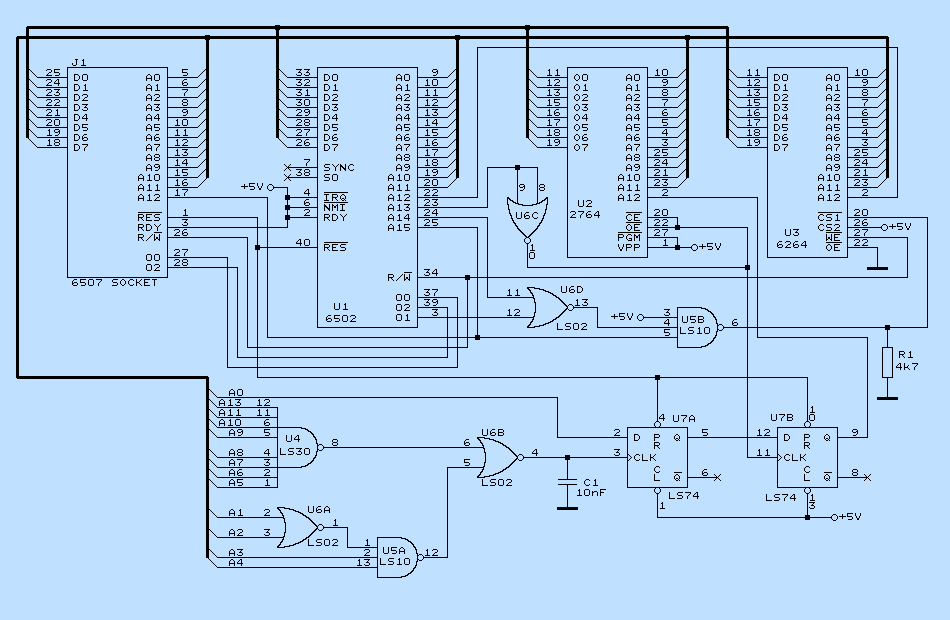
Płytkę należy dopasować do płyty głównej stacji 1050 (uwaga na kwarc!). Pewne egzemplarze nie zawsze startują, bowiem niektóre pamięci statyczne zbyt długo utrzymują informację po wyłączeniu zasilania. Zapobiegać ma temu opornik R1, jednak i to czasem nie wystarcza. Po zmontowaniu układ wkłada się w podstawkę wyjętego procesora 6507. Należy też wyjąć ROM stacji. A oto plik do zaprogramowania epromu: happywar.zip.
Do tego rozszerzenia dołączone jest oprogramowanie hapwarp.zip wraz opisem w jęz. angielskim.
W czasie obsługi HAPPY WARP należy zwracać szczególną uwagę podczas zapisu dyskietki, aby nie otwierać klamki napędu zanim nie zgaśnie dioda sygnalizacji obrotów dyskietki, bowiem powoduje to błąd sygnalizowany cyklicznym miganiem tej diody. Związane to jest z dużą pojemnością bufora danych. Użytkownicy 1050 przyzwyczajeni są do cichego "cykania" towarzyszącego transmisji danych przy zapisie każdego sektora i po jego ustaniu wyjmują dyskietkę z napędu. W przypadku HAPPY WARP cykanie to kończy się po załadowaniu danych z komputera do bufora i dopiero wtedy następuje przekopiowanie zawartości bufora na dyskietkę, ale już bez żadnych odgłosów.
Kopiowanie zabezpieczeń możliwe jest tylko w pojedynczej gęstości (SD).
Naprawa płyty XF551
Ta najlepsza stacja dyskietek ze znaczkiem Atari również ma swoje wady. Najczęstszą z nich jest wyrywanie gniazd SIO z druku, bo z oszczędności użyto płytki jednostronnej. Ponowne lutowanie niewiele daje, trzeba zastosować połączenia przewodowe. Wystarczy od strony ścieżek przylutować kawałki kynaru między pinami o tym samym numerze. Połączyć trzeba conajmniej piny 1, 2 3, 4, 5, 6, 7, 8, 10 i 11 aby zapewnić właściwe działanie urządzeń wpiętych w drugie złącze SIO, np magnetofonu czy drukarki. Na zdjęciach poniżej przedstawione są lutowania z widocznymi szarymi obwódkami pęknięć lutu.
Przy okazji należy dokładnie obejrzeć pozostałe punkty lutownicze i poprawić lutowania w podejrzanych miejscach.
Kolejną bolączką są głowice - potrafią się zanieczyścić i stacja przestaje czytać. Trzeba głowice przeczyścic za pomocą dyskietki czyszczącej, nieraz operację trzeba powtórzyć wielokrotnie aby osiągnąć zamierzony efekt.
Montaż sygnalizacyjnej diody LED.
Niektóre stacje XF551 nie mają żadnej sygnalizacji włączenia zasilania stacji ani trwania zapisu/odczytu dyskietki. Dioda LED sygnalizująca pracę napędu została przez wytwórnię Atari usunięta. Można więc zamontować tam LED, który będzie sygnalizował zasilanie lub pracę stacji. Lepiej jednak zamontować tam diodę dwukolorową zielono-czerwoną. Zielony kolor świecenia diody będzie sygnalizował włączone zasilanie, czerwony - pracę napędu (BUSY). do wykonania takiej przeróbki potrzebne będą:
- dwukolorowa dioda LED w obudowie prostokątnej (nie udało mi się takiej zdobyć) lub okrągłej
- dwa tranzystory NPN małej mocy (2N3904, BC337 itp.)
- 2szt. oporników 1,5kW, 1szt 4,7kW i 1szt. 2,2kW
- Lutownica, cyna, odsysacz, wąska pęseta, szczypce do cięcia drutu i pilniki iglaki.
Pracę zacząć należy rozebrania stacji i wymontowania panelu czołowego napędu. W tym celu należy zdjąć klamkę i odkręcić dwa wkręty mocujące panel, który da się wtedy łatwo wyjąć. Następnie trzeba dopasować diodę do szczeliny w panelu poprzez odpowiednie jej spiłowanie. To najbardziej precyzyjna część pracy - dbać należy o to, by nie uszkodzić struktury wewnętrznej diody. Obudowie diody należy nadać kształt klinowaty tak, by wymiar "a" pokazany na poniższym rysunku (z lewej strony} dopasowany był do szerokości szczeliny w panelu.
Większą trudność sprawia dopiłowanie obudowy okrągłej. Najpierw trzeba spiłować na płasko zaokrągloną część obudowy. Potem spiłować obudowę na płasko w płaszczyźnie wyprowadzeń tak, aby osiągnąć kształt zbliżony do pokazanego na rysunku. W tym przypadku może okazać się konieczne rozwiercenie otworu na diodę (ale nie samej szczeliny!).
Po zakończeniu każdej fazy piłowania należy sprawdzić, czy dioda świeci w obu kolorach. Końcówka środkowa to - (minus) zasilania, obie zewnętrzne to + (plus) zasilania. Diodę sprawdzamy przez opornik o wartości 2,2kW ze źródła prądu stałego o napięciu nie mniejszym od 4,5V i nie większym jak 12V. Opornik należy przylutować do środkowej końcówki, a po zakończeniu dopasowywania i sprawdzania odlutować go.
Dopasowaną diodę należy wkleić w otwór panelu tak, by trzy wyprowadzenia diody znalazły się w płaszczyźnie poziomej. Po zaschnięciu kleju panel montujemy na miejsce i przystępujemy do montażu układu. Montaż bedzie wykonany na "pająka", ale tak, by elementy i ich końcówki nie powodowały zwarć do płytki elektroniki napędu. Przykładowy sposób montażu pokazuje rysunek obok.
Połączenia wykonujemy według poniższego schematu:
Wymiana napędu w XF551
Ciekawym rozwiązaniem może być podwójny napęd w XF551. Napęd oryginalny odłączamy i wyjmujemy, a na jego miejsce wkładamy kanapkę z dwóch napędów: 5.25" slim (np Canon MD5501) i laptopowego flopka (np. Mitsumi D353F3). Napędy trzeba poddać modyfikacjom tak, by czytały i zapisywały dyskietki DD. Niestety jest to okupione koniecznością montażu przełącznika, bo elektronika XF nie obsługuje dwóch napędów. Miejsce na to jest na wypełnieniu otworu przedniego po napędzie oryginalnym, bo nowy zestaw zostawia dziurę o wymiarach ok. 50 X 14 mm. Oprócz przełącznika zmieszczą się tam jeszcze inne elementy, np. wyświetlacz numeru aktualnej ścieżki. Wynik pierwszej, zgrubnej przymiarki widać na poniższym zdjęciu. Konieczne będzie wybielenie czoła MD5501 i obudowy, odpowiednie zaprojektowanie rozmieszczenia przełącznika np. po lewej stronie flopka 3,5", ale to drobne prace.
Po przeprowadzeniu drobiazgowego śledztwa przy pomocy testera ścieżek wiedziałem już, jakie zmiany na płytce elektroniki należy wprowadzić, aby zmusić napęd MD5501 do pracy 80 track DD. Producenci flopów do pecetów upraszczali sobie sprawę montując elementy fiksujące mechanicznie pracę napędów 1,2MB w trybie HD. Pin 2 złącza edge, służący do zmiany pracy z HD na DD jest odłączony z powodu braku zworki JJ24 oraz stała zworka na płytce silnika dyskietki pozwala wyłącznie na 360 obr/min. Usunięcie tej drugiej i założenie tej pierwszej przywraca możliwość sterowania DD/HD stanem logicznym na pinie 2. Zainteresowanych opisem płytki elektroniki sterującej odsyłam do tego dokumentu.
Do ośmiobitowych komputerów Atari przeznaczone też były stacje dyskietek INDUS GT i ich klony LDW Super2000 oraz CA2001.Większość zabiegów serwisowych opisanych przy okazji stacji 1050 ma zastosowanie także przy tych stacjach.
Do najczęstszych uszkodzeń tych stacji należą uszkodzenia bufora 74LS244 i pękanie końcówek stabilizatorów napięcia na płytce zasilania (LDW2000S). Na poniższym zdjęciu pokazana jest lokalizacja bufora 74LS244 na płycie stacji CA2001. W LDW Super 2000 płyta jest podobna.
Objawem uszkodzenia bufora jest brak reakcji stacji na włączenie komputera, gdy zworkami ustawiony jest właściwy numer stacji a stacja ma włączone zasilanie i połączona jest sprawnym przewodem z komputerem. Wymiana układu scalonego U7 74LS244 (patrz schemat LDW2000S) powinna sprawę załatwić.
Pęknięcie końcówki stabilizatora lub stabilizatorów powoduje migotanie wyświetlacza i różne dziwne zachowania stacji. Pęnięcie spowodowane jest poluzowaniem mocowania płytki zasilania. Jest to płytka widoczna na wierzchu po zdjęciu obudowy. Należy przylutować bądź wymienić uszkodzony stabilizator oraz porządnie dokręcić płytkę tak, by nie poruszała się w czasie wciskania wtyku zasilacza do gniazda w stacji. Dotyczy to stacji LDW2000, bo w CA2001 już ten problem został usunięty przez zamontowanie stabilizatorów na osobnych płytkach.
Do częstych uszkodzeń zaliczyć też można pęknięcia plastikowej podstawy osi klucza zamykającego lub mimośrodu docisku. Uszkodzenie to uniemożliwia prawidłowe dociśnięcie i wycentrowanie dyskietki, jest trudne do naprawy i najlepszym wyjściem była by wymiana uszkodzonych elementów. Ich zdobycie jest jednak praktycznie niemożliwe. Klejenie nie daje pożądanego efeku, gdyż elementy te są bardzo silnie obciążone i wykonane z "tłustego" plastiku (twardy polietylen), do którego żaden klej nie ma odpowiedniej adhezji. Pozostaje więc naprawa tych uszkodzeń we własnym zakresie, np. jak na zdjęciach:
Na zdjęciu górnym widoczny jest pęknięty mimośród docisku dyskietki, na dolnym - już po naprawie za pomocą zacisku z drutu. Skręcone końce należy przyciąć, aby nie ocierały o pokrywę stacji dyskietek.
Na schemacie LDW2000 Super przedstawione jest przystosowanie stacji do zapisu dyskietek bez potrzeby ich odbezpieczania (wycinania otworów lub zdejmowania nalepek). Przeróbka polega na korekcie połączeń zaznaczonej liniami przerywanymi. Należy przeciąć połączenia między pinem 1 układu U14 (74LS02) i pinem 36 układu U21 (WD2797), oraz między pinem 32 i 40 układu U21. Pin 32 U21 łączymy z pinem 2 U14, a pin 36 U21 z pinem 3 U14. Od tej pory przycisk PROTECT służy do zezwalania na zapis dyskietki, a lampka PROTECT informuje o aktualnym stanie zabezpieczenia. Podobnie można postąpić w przypadku stacji CA2001.
Częstym problemem jest zdobycie zasilacza do stacji CA2001. Jego konstrukcja jest prosta, to zwykły transformator sieciowy o mocy 25W z dwoma uzwojeniami wtórnymi. Każde z uzwojeń powinno dawać prąd 1A. Największą trudność sprawia wtyczka do stacji. Na poniższym rysunku przedstawiłem jej wymiary. Średnica bolców w gnieździe stacji to 2,3mm.
Do ośmiobitowego Atari wyprodukowano znaczną ilość różnorodnych modeli drukarek. Do serii 400/800: drukarki 7-igłowe 820 i 825 oraz termiczną 822; do serii XL: printer-plotter 1020, igłową 1025, znakową 1027 i młotkową 1029; zaś do seri XE: drukarkę z kołem czcionkowym (daisy wheel) XDM121 i 8-igłową XMM801. Wszystkie te drukarki można przyłączyć do złącza SERIAL (825 jedynie za pośrednictwem modułu Atari 850).
Najczęstszą przyczyną niewłaściwego działania drukarek jest brak smarowania prowadnic głowicy i niewłaściwa odległość głowicy od papieru. Ta uwaga dotyczy wszystkich drukarek igłowych i znakowych, w których karetka porusza się wzdłuż drukowanej linii. Objawy mogą być różne, zależne od konstrukcji mechanicznej. Do smarowania współpracujących powierzchni można stosować olej silnikowy. Nie należy przesadzać z jego ilością, 2 - 3 krople powinny wystarczyć. W przypadku znacznego zabrudzenia prowadnicy trzeba ją oczyścić przy pomocy benzyny ekstrakcyjnej i dopiero potem nasmarować. Do smarowania nigdy nie używamy oleju jadalnego, gdyż po pewnym czasie zasycha tworząc trudną do usunięcia skorupę!
W ploterze Atari 1020 najczęstszą przyczyną uszkodzeń i najtrudniejsze do naprawy są pęknięte plastikowe kółka zębate na wałkach silników napędzających karetkę z pisakami i przesuw papieru. Tu karetka również jest napędzana linką, ale jej prowadzenie jest dużo prostsze niż w Atari 1027.
Zmorą są także wysychające pisaki, jednak te również można regenerować:po delikatnym wyciągnięciu końcówki zaaplikować do wnętrza kroplę wody lub odpowiedniego koloru tuszu do pieczątek.
Na brak smarowania prowadnicy szczególnie czuła jest drukarka Atari 1027. Jej budowa jest mocno skomplikowana, napęd karetki i młoteczka odbywa się za pomocą linek, i każdy nadmierny wzrost oporów powoduje jej niewłaściwe działanie.
Taśma czcionkowa nałożona na walec głowicy jest podzielona na segmenty oddzielone separatorami z cienkiej blaszki stalowej. Z tyłu papieru jest umieszczony młoteczek, który uderza w papier dociskając go do czcionki. Młoteczek musi zmieścić się między separatorami, których zadaniem jest nie dopuszczenie do odbicia na papierze fragmentów czcionek z sąsiednich segmentów.
Gdy opór ruchu karetki lub młotka jest nadmierny - silnik napędzający "zgubi" krok i młotek uderzy w separator, a ten zakleszczy się w gumowej taśmie czcionkowej. Zakleszczenie takie należy usunąć jak najszybciej, gdyż po pewnym czasie nieodwracalnie odkształci się taśma czcionkowa. W skrajnych przypadkach trzeba zdemontować głowicę, co jest bardzo trudne z uwagi na skomplikowany sposób prowadzenia linki.
Zdeformowaną taśmę można spróbować zregenerować poprzez krótkie (ok. 1min.) zanurzenie we wrzącej wodzie. Taśmę czcionkową można zdjąć bez zdejmowania głowicy odkręcając (po obróceniu walca palcami) dwa mocujące go wkręty. Trwałość materiału, z którego jest wykonana taśma z czcionkami jest ograniczona, bowiem po ponad 30 latach (jako że w tym wieku jest ten sprzęt) twardnieje, kruszy się i rozpada czyniąc drukarkę 1027 niezdatną do użytku.
Można pokusić się o wykonanie taśmy czcionkowej jako matrycy fleksodrukowej lub zamówić w wytwórni pieczątek, ale wymaga to szeregu prób, by dopasować odpowiednio wymiary taśmy do bębna. Za to można wykonać kilka taśm z różnymi krojami czcionek i zestawami znaków.
Na walec czcionkowy nanoszony jest barwnik z wykonanej z gąbki rolki zakładanej na głowicę. Zużyty barwnik można zregenerować. Do tego celu nadaje się tusz stosowany do datowników na poczcie czy w bankach.
Drukarka Atari 1029 była sprzedawana za pośrednictwem Pewexu. Jest to drukarka mozaikowa, ale bezigłowa. Głowica zawiera silny magnes, w polu którego znajduje się sworzeń elektromagnesu zakończony lekko ukośnym nożem. Gdy ma zostać wydrukowany punkt - nóż ten uderza poprzez taśmę barwiącą w papier. Za papierem znajduje się długi wałek o przekroju w kształcie gwiazdy, który obraca się z określoną stałą prędkością. Uderzenie noża powinno nastąpić w odpowiednim momencie, gdy garb wałka znajdzie się na wysokości odpowiadającej drukowanemu punktowi. Skomplikowany to sposób druku i mizerne są jego efekty, ale cena drukarki to usprawiedliwia.
Typowe uszkodzenia to pęknięcie magnesu w głowicy i zacieranie się wózka głowicy na prowadnicy. O ile smarowanie prowadnicy (opisane przy okazji opisu drukarki 1027) usuwa to drugie uszkodzenie, to pęknięcie magnesu uniemożliwia dalszą pracę drukarki i nie obędzie się bez wymiany głowicy.